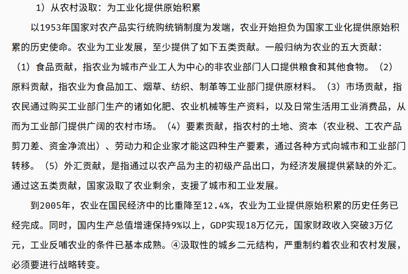

最新
97年金融危机的时候，中国外贸占到GDP一半以上，98年陡然下降，中央启动扩大内需，组织紧急救市。三万六千亿西部大开发，两万四千亿东北振兴，启动六万亿投资拉动内需。当时正好是40万家中小型国企关停，4500万国企职工下岗待业，在这种情况，教育的扩招，将高校扩招当做缓解就业蓄水池，让高中毕业生进入大学，争取四年缓冲期。高校扩招财政没钱，严重负债，就把扩招变成高校扩地盘，没钱就负债，就走教育产业化道路。这就是那一轮危机造成的代价，至今未消化。并不是领导人不知道这样做的后果，而是领导人没有更好的办法。大家批医疗，医疗产业化不也是那个时候吗?
外资进来让我们成为世界第一贸易大国，我们三分之二的产业都是外资控股，2008年奥运会唱的歌：“我家大门常打开，开放怀抱等你”，听着不太正经，但是很真实，就是外资在中国形成了产业的控制，在中国获利高达21%，它当然认可紧密的战略合作伙伴关系。美国现在不满是因为我们开始分利了，产业的利益变成相对均衡收益的时候，他的21%下降到15%，丢了6%，虽然还是高利润，大部分还是不愿意走，但一部分已经开始寻找那些新的获利超过他在中国获利的地方
08金融危机后，我们开始进入生产过剩阶段，到2012年，出现了经济下行生产结构性过剩危机，2013年的时候，当时还有些秉承西方教科书的研究人员提出我们现在的新常态，经历有些波动式常态，他不承认经济下滑。到2014年实际上已经明显下滑了，我们才开始承认了经济下行期，提出了工业第一次改革，这在中央层面上，叫做工业供给侧改革，于是2014年出台了三去一降，针对的都是生产过剩。然后2015年承认经济出现L现象，2016年承认出现连续L现象，同时又出现农业的结构性过剩，出台的文件叫做农业供给侧改革。于是中国的工农两大类，第一产业、第二产业都进入了生产过剩。目前，正遭遇金融资本过剩，中国进行了大规模的增发货币，并且在2016年以后，我们变成了金融资本总量全球第一，是美国最大的债权人，这些都是中国从来没有遭遇过的金融资本过剩.
随着产能、资本过剩的到来，中美在产业资本和金融领域矛盾凸显。美国是私人银行家联合起来组成的美联储来决定金融政策，然后政府配合，美国政府的强大的政府权利，和政府控制的军队，服务于美联储私人银行家组成的机构形成的决策。我们所有大型银行和上市公司都建立了董事会和监事会，大型国企都有党组织，在一定程度上直对中央，所以我们可以一声令下，所有大型国企统一行动。
又如与西方国家在非洲的竞争，西方是私人公司来谈的，我就要你的资源，你是石油还是煤矿还是铜矿，你给我，我来开发，其他事跟他没关系。中方是你是不是想发展教育呢?我帮你建学校。你是不是要搞医院呢?我帮你建医院。你是不是缺电力呢?我帮你建电力。同时我的资源开发公司跟你谈判，你把资源开发的收益用来承付这些基本建设的开支，公路铁路电力学校医院都帮你上。对于西方来说，你夺了他的市场，你抢了他原来的事情干，切人家的奶酪，而且是大块的切。“一带一路”在做的，就是切的金融的蛋糕，我们与一个国家的双边投资协定，就是各自用本币做贸易融资，而美元现在作为世界主要结算货币，你不是在抢他吗
第一大战略是区域整合。中国当我们在外界受制于人的时候，要解决国内的工业生产过剩，怎么办呢，靠区内的区域整合。粤港澳大湾区的整合是中国区域整合的第一大区域整合战略，整合目标是要将粤港澳大湾区建成世界最大的经济湾区，人口总量、经济总量都是世界最大。单单畅想一下资本市场，如果把深圳和香港加在一起，那么他们的资本市场就足够大。第二大整合是长三角一体化，长三角一体化带动了长江经济带，第三个就是京津冀，包括北京天津石家庄济南这一片，也是一片经济区，这三大经济区都是沿海。东北到西伯利亚本来还有第四个整合带，形成一个能源和制造业之间的整合的经济带，但随着朝鲜的和平的实现，这是不可能实现的。
第二大战略乡村振兴。我们国家原来有380万自然村，70多万的行政村，近些年，随着城市化的高速扩张，使得自然村下降到了100多万，行政村从70多万下降到现在的50多万，减少了三分之一。其实“两山思想绿水青山就是金山银山”的两背后是两化，生态产业化、产业生态化，推进山水林田湖综合系统开发，最终达成的叫做生态资本升华。我们也在各地设计怎么实现两山两化，最终达成的事生态资本深化.
当中美贸易战背后金融战开打的情况下，继续把货币外取得可能性是不存在的，于是把货币换锚是重要举措，货币原来的锚定在外汇储备上，改为锚定在什么上呢?现在我们开始用自己的货币来结算，尤其是2008年经济危机一爆发，中国先和东盟签了自贸协议，中国东盟之间实现10+1，10+1实现各自用本币结算，切了美国的蛋糕，日本一看这不行，要搞10+2，韩国一看这肯定不行，要搞10+3，本来最大的美元结算区，现在互相之间贸易变成了用了本币结算，抛了不下上千亿，这就意味着美元要收到致命打击，中国干这事的时候，奥巴马正式声明要高调重返亚太，什么叫高调，直接以军事实力压向亚太，保证60%的军事力量放在亚太，说让你们三国造反，压着你
建设银行:CCB
工商银行:ICBC
农业银行:ABC
中国银行:BC
温铁军 中国经验
2018-12-21下午
下文图片来自/周立/的论文

八次危机——中国的真实经验
荀子《天论》：天行有常。不为尧存，不为桀（jie2）亡。循道而不贰，则天不能祸
- 用脚做学问
- 三大问题：意识形态问题，政治体制问题，城乡二元结构体制
- 唯有国家工业化才能维护主权独立，任何工业化都绕不开资本的原始积累。
- 内向型原始积累（中国）&&外向型原始积累（殖民）。
- 三农问题：农民权益，农村稳定，农业安全
- 以大规模劳动替代零资本维持产业资本原始积累
- 除了双规，几乎没有甚末手段可以管住地方大员
条块分割：是比喻两种指挥体系把整个国家人为分割成不同的领域
尾大不掉：部下的势力很大，无法指挥调度；现比喻机构庞大，指挥不灵
- 中国的真正优势：城乡二元结构体制+土地均分下的基本财产关系
- 加工贸易所需要的生产线+集中食宿催生国际工人运动史上规模最大，阶级自觉性鲜明且善于斗争的“新工人阶级”
- 约70%的中国新生中产阶级欲携带资产移民海外的主要原因：新工人阶级崛起
- 认识见之于实践，主观见之于客观 的经验归纳和理论提升
- 四大黑：军、官、医、教
- 长期向发达国家进行商品和资本的双重输出
- 官产学媒 四大强势利益集团结盟
- 中国主导的改变强权把玩国际秩序的创新性话语体系
- 顺资本过剩之势 改造发展方式
- 应对危机之需 改良发展政策
- 资本主义文明创造的两个代价高昂且反制人类自身的产品：经济基础上的资本，上层建筑上的政府
- 由政府占有的资本必然导致政府公司化，和权力资本化
- 不在于对客观规律的承认与否，而在于如何把握规律来进行自我约束
- 主题：
- 资本与政府
- 城市化与周期危机
- 政治现代化成本与债务危机
- 成本转嫁论与发展陷阱
- 危机软着陆与加强三农
- 城市资本“泛政治化”？
- 资本积聚与风险集中不仅等量而且同步
- 能够跳出发展陷阱的国家大都有某种条件对内转嫁成本
- 对外开放从来都是双刃剑
- 1971,西方资本主义元年，布雷顿森林体系解体
- 原住民人口超过1亿的国家；中国、印尼、印度、巴基斯坦、孟加拉
- 产业资本发展的三个阶段：原始积累、产业扩张、结构调整
- 中国是在几乎不具备工业化内外步条件的情况下进入工业化的。（苏联援助）
- 周期性经济波动是符合工业化一般经验和经典理论规律的历史过程
- 世界系统理论：通过不平等交换，半边缘和边缘地区的剩余不均等的往核心区域输送
- 第三世界依附理论
- 资本主义世界体系的中心-外围结构是“统治依附结构”
- 全球政治家都不得不以经济增长来表现权利合法性的庸俗政治压力下
- 发展中国家到 工业化路径：对内剥夺+对外负债
- 成本转嫁对象：向外（殖民地）、三农、资源环境
- 工农产品价格剪刀差为工业化建设提供原始积累{农民付出了：土地+劳动力+农产品}
- 剪刀差；工农产品交换中，工业产品价格高于其价值，农业产品价格低于其价值
- 中国经验的特殊性在于外资或外援中断后国内的工业化进程没有中断
- 发达国家借由主导制度建构向发展中国家转嫁制度成本
- 长期以来，产业资本集中的城市利益代表在政府决策中的影响压力远大于农村。
- 产业资本阶段的基本矛盾是：社会化大生产和生产资料私人占有制之间的矛盾
- 社会基本矛盾是：生产能力的相对过剩和民众购买能力相对下降
- 传统的乡土社会是容易稳定的，现代的城市社会则不容易稳定
- 简单的加快工业化和城市化直接挑战者中国社会发展的可持续性和抗风险能力
- 发展中国家贯彻亲民生政策前提条件；资本不再成为稀缺要素，国家债务压力下降
- “草尖”离农倾向使农村内部化处理外部风险的能力弱化
- 默许地方频繁使用专政机器维持短期稳定？？
- 2.4亿农民家庭大多数还有“一亩三分地”作为无风险资产
- 中国的三农不经承接了当代工业化原始积累的制度成本，而且成为经济危机代价的主要载体。
- 凭借土地革命有效完成了构建政治国家所必需的最广泛的政治动员。
- 单纯依靠国内的城市群众运动根本就不可能消化掉发生在城市经济中的资本原始积累所带来的制度成本？
- 鸭绿江：中国（134万，牺牲14万）-联合国军（17国；111万，美国54万）
- 苏联援建：能源、材料、机械、国防、造纸。
- 50年代初，华北地区的干部70%是文盲和半文盲
- 苏式工业化经济导致上层建筑（包括军队）全盘苏化
- 苏联科层等级制度：官僚主义、教条主义、形式主义。红色割据延续下来的“山头主义”
- 三大改造完成后，政府公司化占有了三要素：土地，劳动力，资本
- 1958；苏联提出军事联盟，毛：你把中国拿去吧，我上井冈山！
- 制度路径依赖：
- 上层建筑反作用于经济基础
- 要饭的也得有跟打狗棍：60年代：
- 集中力量发展核武器，应对战争威胁
- 三线建设准备核战争：形成相对安全的战略后方
- 加入WTO：国内产能过剩压力借开放之机积极寻求向国际市场释放
- 国际资本在金融泡沫压力下，也可以向中国要素低谷扩张
- 产业结构调整：劳动密集型产业转移到发展中国家，留下技术密集型，和资本技术双密集型的产业
- 当年的人们不可能有今人的问题意识
- 高投机性的高风险市场；地产、证券、期货
- 1993年，财政、金融、外汇三大赤字危机爆发，经济病态过热
- 农村集体化服务于国家资本原始积累
- 新中国前三十年的每十年一次的经济危机，软着陆50-60-70
- 后二十年，每五年一次的经济危机，硬着陆80-90
- 09年次贷危机，软着陆
- 乡村工业化+城镇化 的县域经济发展：内需拉动：80年代初
- 三无群体：无工作、无住房、无保障
- 中国的经济体制改革本来就源于政府在经济危机发生时做出的应对调整政策
- 大包干为名，政府退出不经济的农业为实的农村改革
- 五小工业一般指小钢铁、小煤矿、小机械、小水泥、小化肥五种工业企业
- 1992年取消票证制度，进入货币化时期-仅仅两年资本便取得了绝对强势地位
- 城市利益集团主导政策变革：80年代
- 医疗和教育这两个领域具有信息绝对不对称，且具有可以被个体垄断获得暴利的特征
98-08两次金融危机（输入型）的发生应对及影响
- 新中国四次外资引进，8次金融危机
- 这两次为全球化条件下，第四次外资引入带来的输入型危机（对应外向型经济）
- 天佑中华，形势终究比人强。
- 前三十年：产业资本积累（极度短缺），后二十年产业资本在国内扩张（前面过剩）
- 政府进入是中国应对输入型危机的主要经验
- 放权让利为名，各自为政为实
- 金融改革实质在于牵涉国家的政治体制
- 地方政府控制金融资源的冲动和行动，造成了地方金融机构对地方政府的实际隶属
- 改革的成效不仅在于改革的收益被哪些利益集团获取，更在于制度成本被利益集团成功的转嫁出去
- 地方政府甩下烂帐，由中央政府承担，再以改革为名转嫁给社会
- 2002年，金融资本从产业资本中独立
- 不准加重农民负担的文件出台客观上反映出农民负担不断加重的事实
- 国内资金成本过高客观上压抑了面向内需的国内企业的获利空间
- 给点阳光就灿烂
- 人们的意识不可能是先验的而只能是渐进的
闭门会议讨论
- 西方只能有政府通过信用扩张转嫁危机代价？
- 资本全球化会导致世界法西斯主义
- 霸权国家通过强权政治赋权的金融信用无度扩张的特权对世界犯罪
- 全球贫富28开（20%的白人）华盛顿共识
- 劳工群体的集体失语？
- 西方主流话语培养的知识分子不自觉的被西方意识形态所控制
- 劳工群体通过大规模斗争才成为引领社会进步的主要力量
- 资本主义必将走向自我毁灭？依据？
- 当前世界基本秩序短期内难以改变，不可控风险在增加。
- 金融资本的深化和扩张几乎不受本国大众制约（全世界无产者联合起来！）
- 发达国家的危机已经从金融危机演变为与其高成本的政治体制具有内在相关性的财政危机
- 下一轮债务危机发生时，发展中国家也会因为财政过度负担债务而危机。
- 过去美国大学生70%读技术专业，现在70%读工商管理
- 06年美国服务贸易也出现逆差
- 金融危机、财政危机、产业危机、社会危机。
- 从大国兴衰的规律看，在长期衰弱的趋势下，大国都可能出现战略冒险。
- 中国未来发展的制约：
- 战略性资源、能源的供给约束
- 国内的制度成本不断累积
- 水资源短缺，
- 与国家战略利益相比，经济利益还是第二位的
- 对策：创新作为国家的核心竞争力
- 警惕保守主义的民主政治+殖民扩张
- 通过政党来提高国家的整合能力（公平）（去招商引资，曾政治性）
- 要想政改先还账；解决劳资矛盾
- 危机发生时最大的问题时劳动力失业造成社会动乱
- 只有以银团投资带动产业输出的方式对一个地区进行综合开发，才能长期进行
- 劳工群体需经过长期斗争和知识分子的参与，才能具有阶级自觉性
- 欧债危机源于西方民主制度的成本过高
- 要的是劳动者扩大再生产的福利需要，还是西方消费主义的休闲享乐
- 美国虚拟资本、债务、军费站全球一半
- 中国的真实基尼系数早就突破0.6
- 中国中产阶级崛起，影响社会、政治、经济
- 中产阶级刚刚形成就开始衰落，这也是第三世界的一个特征
- 政治和资本对社会生活进行殖民统治
- 任何一个风浪都能把中产阶级吞没。（因为不稳定，所以追求稳定）
- 没有调查就没有发言权
解构现代化
- 我活着因为我思考，我思考因为我困惑
- 21世纪中国最突出的问题是就业问题（一二三产业都不能产生大量就业，现代农业实际上只需要一个亿的劳动力）
- 人口结构：8亿农民+5亿中产+几千万大资
- 不破不立，不塞不流，不止不行：再来一次思想解放运动——吴敬琏
- 实践是检验真理的唯一标准
- 中国资本的最后竞争可能是国内资本和国外资本的竞争
- 欧美只允许自己走殖民化-现代化的路。后来的别人是不能走的（没有空间了）
- 金融的根本功能是中介
- 美国已经成为唯一的霸权国家，根本不必搞阴谋
- 你感动完了，书也写了，那以后呢？
- 在调研中反思、
- 市场经济下三大差别扩大现象不仅中国特有（贫富、城乡、地区）
- 英国人之所以不强烈反抗在于英国的殖民地能够大量的向本土回流资本收益被国民分享
- 为什末社会科学不能称之为科学？因为不能实验
- 虚拟经济膨胀必然走向崩溃的客观规律
- 资本市场主要是个把资源和资产通过资本化来产生增值的工具
- 利益决定思想。不这样干就得不到职称！
- 当权力客观上可以不受制约的时候，在一个国家的内部必然导致腐败
- 美国打伊拉克：当狼要吃羊的时候，你还能问狼有什么理由吗？
- 过剩资本推动的资本全球化与民族国家利益冲突
- 从经济上说，意识形态是一种动员国民、整合资源的工具
- 干涉方式：贿赂、颠覆、爆炸、暗杀、搞恐怖主义活动。
- 毛：如果发生第三次世界大战，最好发生在欧洲，而不是亚洲。
- 两次世界大战都是在产业结构趋同的国家发生。
- 产业结构越完整的国家的稳定性越强，同时如果不扩张的化内部危机越重（国企）
- 历史上只要中国在亚洲崛起，日本和韩国就没有好日子过。东南亚则谁强跟谁走。
- 发展中国家普遍发生的大城市超前繁荣，传统农区难免衰败的趋势：资本压低劳动和资源价格
- 现在是不充分的全球化：资本全球化（自由流动）
- 全球已经没有资源可以资本化了：大量的资本无法增值----法西斯主义复苏
- 没有新的资源就没有资本收益而作为现代化的市民是（单一收入-多元消费状态，即高成本生活）农民的低成本生活
- 今天全球化矛盾的深刻性远超20世纪。
- 国内垄断大资本面临国际大资本和国内各种利益集团的压力
- 我们的体制好就好在可以集中力量办大事，只要这个当还存在，这个特殊优势就可以随时发挥作用。（每个干部都是螺丝钉）
- 具有垄断地位而积重难返的卫生体制
- 贫穷是万恶之源
- 无论官办教育还是私立教育实际上都是如何分享教育部门垄断收益的问题
- 教育投资就是在购买文凭（找不到真正的大学，找不到真正的教授）
- 农民不交税：交易费用太大，不适应现代税制
- 今天的你我有不得不重复昨天的故事
- 单纯的农业生产合作社成功率5%，成功的基本是综合性合作社。（利润太薄）
- 陈锡文：东西差距本质上仍然是城乡差距
- 如果没有在基层滚一身泥巴，就没有从基层出发看问题的角度。
- 粮、棉、油、肉、菜、蛋：农产品
- 经济学讲预测三到五年就是远景了，30年规划几乎不可能
- 中国农业的产值只有15%，农业人口却占了70%
- 20世纪中国的农民问题是土地问题，21世纪的农民问题是就业问题
- 1950年，毛全国政协讲话：社会主义那还是遥远的将来。
- 高度分散，半自给自足，生活性需求与生产性需求混合在一起。小规模、长周期、高风险的中国农业经济
- 美国劳均面积800多亩，800公顷以下的农场基本不怎么挣钱
- 中国内部的第三世界：农民
- 在销售、加工、金融、保险进行农民组织
- 乡公所只是一个传达机构，自治村直接对接县政府{改革方式}
- 国家支农资金不要投到部门，不要期待收益，要放到合作社。
- 农村高利贷中33.8%是生活性借贷，29%是垄断性消费（教育医疗）。只有11%用于生产。
- 农民在土里“刨食”。土地是农民的社会保障
- 现在城市犯罪70%以上是流动人口犯罪。
- 产权重不重要取决于交易，没有交易就不重要。（没有交换就没有定价问题）
- 财政连城市都不保了，还让他支农？
- 虱子多了不咬，债多了不愁
- 没有公共属性的政府投资就是入股。社会企业
- 军事工业投资100与90的差异，就是国家之间竞争胜负的关系
- 金融是一种以货币为表现形式的社会信用
- 中国老农民已经活了5000多年了
- 报纸上空喊着加强农业，政策呢？措施呢？
- 没有公平什么提法都可能造成农民的损失
- 所有统一的能够产生规模效益的服务都是规模经营
- 基层组织薄弱，制度空白各级政府基本上无钱办事
- 不争论，少谈主义，多谈问题
- （做了不一定成功，八成失败。但不做一定失败！）
我们到底要什么？
- 资产阶级民主革命在在几乎没有资产阶级的中国，无论在政治上还是文化上，都不可能成功。——近代史的悲剧原因
- 舆论导向宣传的都是些成功人士，好像大款成为社会主流
- 即使再怎么追求也达不到舆论所展示的现代生活，尤其是农村青年
- 皮之不存，毛将焉附？ 思想需要现实抓手 （个人与集体的辩证关系）
- 国有资本是占有劳动者剩余价值形成的
- 从实践中提取感性认识，总结归纳形成理论
- 科学研究两种方法：1、总结前人经验，验证结论。2、试验法
- 坚持 报忧得忧 的人良心上也是利益最大化的，从这个角度看人生我觉得心平气和
- 中国的农民战争：1、人口资源矛盾。2、社会坚持少数人占有更多资源的制度，3、天灾，战争等作为导火索
- 影响中国社会、政治、经济发展的第一大矛盾过去现在将来都是就业问题
- 科技成果转化为现实生产力也需要发展中小企业
- 房价中2/3的价格时不合理的：1、地价（国有土地）。2、配套基础设施
一波四折——20世纪中国问题研究
- 民国自亡于过量提取社会剩余所引发的社会冲突
- 不同的原始积累过程产生正反两面的制度经验（有市场的对外殖民，没市场的对内剥削）
- 中国的工业化真不容易，因为几千万人已经付出了生命的代价
- 无论革命还是改革，往往都是逼出来的
- 财产制度安排制约政治制度形成
- 我们早已经不是国家所有制，而是集团化的部门垄断资本
- 如果性不成社会化的产权制度就形不成合理的政治制度
- 资产的社会化与生产的社会化相结合
- 西方的个体化私有制经济（采集狩猎文化，以战争来控制资源和市场）VS东方的群体化公有制经济（灌溉农业文化）
- 照搬理论是没出息的——行万里路胜读万卷书
- 资金利率高于10%的条件下必然产生泡沫
- 资本市场放开应体现“国有资产社会化”的社会主义原则。
- 工、商、建、运、服。农、林、牧、副、渔：十业并举的农业特点
- 以小城镇建设吸纳农村过剩人口
- 重建农村的积累制度：劳动积累，资金积累
- 第三产业没有规模人口和规模消费就不可能存在
- 对财产的控制和对资源的配置是权力的出发点和归宿
- 改革的核心问题是通过国家资本社会化来还原劳动者在前三十年原始积累中付出的剩余价值
- 毛时代，中国仅用28年就完成了从农业国向工业国进步所必需的原始积累
- 这种积累必然带累众多的社会和政治问题
- 这是一代人以革命的名义无私奉献
- 假如没有战争把现在的平民政府再一次造成英雄政府，则中国的市场趋向的改革趋势是不可逆转的。
- 体制改革是个筐，甚末都能往里装
- 在朝鲜战争的教训下，为了维持三代政府、打了一百年、死了几千万人才初步的到的民族独立。接受苏联的援助
- 沧海横流，方显英雄本色——强力变革的产生-极端环境造就的强人的强硬手段
- 最为腐败的金融资本垄断集团明白他们正在朝全球金融危机的单行道上急驰。但却没有意愿主动改变自身与生俱来的追逐超额利润的本质
- 国际大资本必须从发展中国家实物经济增长中掠夺利润才能存活。
- 让华人经济圈的发展改变被西方主导了600年的历史。让这个世界多少公平起来。
- 美国轰炸大使馆的一石三鸟：遏制欧盟、削弱俄罗斯、逼中国假如军备竞赛。
- 保持美元的强势地位是美国经济政策的核心
- 欧盟的经济政治一体化将是对美国霸权的最大威胁：其最有条件捅破美国经济泡沫
- 几乎所有社会主义国家的公有制随着资本原始积累的完成，从‘全民所有制’转变为“单位所有制”
- 社会主义公有制经济的本质特征是劳动者占有生产资料。
- 日耳曼人的精明与冷酷？？
- 垄断部门：宰你没商量！
- {城市高成本的原因；每个人都是单入多出造成雇佣成本普遍提高}
- 新中国建树在第三次土地革命战争胜利的基础上，主要是两千万中国农民抛头颅、洒热血夺取的新中国政权。——人民英雄纪念碑
为了反对内外敌人
争取民族独立和人民自由幸福
在历次斗争中牺牲的人民英雄们永垂不朽！
- 现在年轻一代不清楚问题出在哪。问题出在第二次世界大战后的实力范围划分
- 苏联提出与美国划江而治——中国：打过长江去解放全中国
- 朝鲜战争结束后中国只能倒向苏联阵营
- 任何经济现代化发展都无法跨越原始积累这个阶段
- 如果不以产权清晰为前提，就没法加强管理
- 改革的实质在于在内部符合多数人利益的细致的制度安排
- 无论多无伟大也不可能揪着自己的头发离开地球
- 房地产业异军突起从来就是金融投机之大忌
- 农村改革无心插柳——可以可以又可以
- 民间资本的再原始积累——国家资本社会化
部门垄断经济利益明显出现集团化、政治化趋势。并且已经对政府决策形成压力。
中国在改革和发展的十字路口上所做的选择可能是最有历史意义的美学追求！
- 九亿人给两亿人搞饭吃，足够吃饱穿暖。
演讲
- 苏联解体->美国军事技术民用化-》美元回流-》科技公司崛起-》亚洲金融危机-》中国银行坏账-》四大资产公司清理坏账（现在还没清完）
- 朱：中国版的罗斯福新政
- 七上八下：增长率小于7%就业不充分，大于8%通货膨胀。
- 朱最钟意的接班人温，朱规温随
- 先倒下去的就是失败者，没倒下去的得一金腰带（伤敌一千，自损八百）
- 债市和汇市是联动的。
- 世界其实很简单。
- 价值判断Vs 制度成本分析
杂项
- 我认为《自然》、《科学》这些杂志上的观点有九成是不正确的，发表十年之后，还能被认为是正确的只剩下一成。首先，不要相信论文里写的东西。对于研究，要一直钻研到眼见为实、让自己确信为止
- 英国脱欧打烂了美国金融资本在欧洲控制与打击欧元的桥头堡，使美国的金融资本与本国产业资本的力量对比发生了突然变化，导致了川普所代表的产业集团上台掌权
- 川普产业资本集团的“三去一降一补”：去虚拟、去逆差、去军费，降美元汇率，补产能
- 川普产业资本集团要实现重振实体经济所面临的主要困难是什么：没钱！
- 今天美国产业资本要复兴，必然要走与虚拟资本完全不同的道路，美元要弱，贸易逆差要消除，但弱势美元和资本净流入停滞，必然会与重振实体经济的目标产生矛盾，就是因为美国国内储蓄严重不足
- 社保、医疗、国防这三项支出占了美国全部财政支出的75%，再加15%左右的行政开支，就已经到90%
- 国防预算开支，加退伍军人费用、装备研究费用和用于伊拉克、阿富汗的海外行动经费，美国每年的国防相关开支是7700亿美元
- 美国的军费目前占世界一半，比排在世界军费前十国家的九个国家之和还要多
- 美国要振兴实体经济，一不缺资源，二不缺市场，对海外资源与市场就没有扩张性要求。它的最大阻碍，在政治上是来自代表国内虚拟资本集团的政治势力的反对，经济上就是缺钱
- 振兴实体经济是一个长期问题，至少需要十年时间，因此美国围绕退守国内搞实体经济振兴所涉及的政策，应该是以至少十年为限来考虑的
- 从哪找钱？只能拆东墙补西墙，前面说了，在美国三大财政支出中，社保不能拆，医保只能拆一点，所以从财政支出看，最大的空间就是拆军费这面墙
- 美国要减军费，不仅是给川普政府省出钱来搞减税、搞基础设施更新、搞建墙，也是为了美国可以把大批军工制造业转为民用，从而加快振兴实体经济的过程
- 朝鲜和伊朗这样的所谓“流氓国家”，不仅与美国为敌，还正在或已经成为有核国家，并且还在发展运载武器，是对美国的潜在威胁，一旦美国在战略上退却，军力大幅度下降，就可能成为美国的现实威胁
- 2002年中国有了银行
- 迈开双脚，走向世界，用自己的眼睛去观察
- 金融资本恶性竞争：以恶治恶？以善治恶？
李昌平
河北大学乡建研究中心主任
- 既然小农会长期存在，重建小农村社共同体、并由小农村社共同体主导农村发展和治理，必须成为基本国策；
- 以 “村社内置金融”为切入点，突破长期制约中国三农现代化的双重瓶颈——“农民组织无效和农村合作金融无效”
- 世界最难解决的问题就是发展中国家的农民问题，唯有去做、去实践，才有可能找到破解这个世界性难题的办法
- 林地、农地确权后，正规金融机构是不会接受农民林权证、承包证抵押贷款的。这是因为：权证抵押给银行贷款后，农民违约后银行要通过很复杂的司法程序才能把产权过户到银行，成本极高；银行得到农地林地后，再转包经营所获得的收益可能还支付不了成本
- 农村金融探索
something
- 行商&&坐商：商业资本——产业资本
- 学习：中产阶级入场券？
- 现在是以国家为单位的竞争（发展中国家生产，发达国家消费）
成本和收益
温铁军
- 器物说:
- 1870年后,满清财政赤字(两次鸦片战争赔款)
- 曾国藩,左宗棠,李鸿章地方势力系统
- 战争:国家犯罪
- 产业兴，则百业兴”，有了乡村产业的发展，就业、创业、养老、养生、教育、康养等功能不断被开发出来。
- 任何交易都因信息不对称而生成外部性.
- 水,旱,黄(河),汤(恩伯)
- 农业:数量,质量,环境安全;
- 村社整合:
- 企业成立:来源于内部的资本积累
- 企业危机:停产,种地(土地作为保障)
- 人穷命贱好打仗
- 当代危机是制度危机->制度成本过高
- 社会结构 :: 大资:2%->中资23%->小资75%
- 危机最大的影响是:社会影响
- 金融资本的高风险要求其必然依赖政治军事强权
- 国债是老百姓未来的税收
- 战略:
- 1999:西部大开发~3万亿
- 2001:东北振兴-2万亿
- 2004:中部崛起:2万亿+
- 2005:新农村建设:5~6万亿
- 2008:汶川地震:2万亿
- 2009:救市:4万亿
萨米尔 阿明
- 可变汇率 ，作为一个体系，在1973年为取代由美国单边决定相对稳定的固定汇率的布雷顿森林体系而建立起来的，三巨头（欧洲和日本）的伙伴们接受了这个体系，并把它推行到几乎所有南方国家
- 新体系并没有带来稳定性,相反，我们见证了巨大的 波动
- 就主要货币（美元、英镑、日元、欧元），和几乎所有南方国家的货币之间的汇率而言，新体系也带来了持续的贬值
- 可变汇率加大了国内经济政策的选择限度吗？没有，相反，它限制了那个限度
- 只要中国不能像美国那样，通过军事干涉的威胁，来保护它的资产，那么，它就不能避免在国外购买实际资产（公司、矿藏、耕地）的脆弱性。加入全球金融系统并不能降低这种脆弱性。
- 外国金融资本把危机的代价转嫁到了那些国家，使它们的货币贬值，这样，在印尼的外国银行就可以以极低的价格购买林地（后来变成了棕榈油生产基地）、矿藏等等
- 一个新的帝国主义的世界。我将其称为集体帝国主义（三支主要力量：美国、欧洲和日本）
- 寡头政治也在统治美国，当在华尔街游行的人们说“我们是99%”，意思是这个系统被1%的人统治
- 乡村社会的模式和创造一个完整体系下的现代民族工业
- 对抗帝国主义三合会（美、日、欧)
- 2500万埃及民众签名要求穆尔西下台，称他的当选只是一场巨大的骗局，其总统职位的合法性并未得到埃及司法机构的承认，而是来源于华盛顿
- 因为金球金融化自身已经在内爆并走向衰落，你们为什么要加入一个正在衰落中的体系呢？如果中国能保持独立性，那么相对于这种衰落趋势你们将获得有利的地位
- 第二个使中国能抵制这场内爆的积极因素是，直到现在中国还保持了土地没有被商品化的制度
- 权力的社会合法性是很重要的，当权力系统，包括军事力量，失去了社会合法性和可信度时，它就会衰落
- 人们逐渐意识到问题本质的复杂性和挑战的艰巨程度
- 这是20世纪的第一波，现在我们迎来了第二波浪潮，也是从边缘地带开始的
- 中国人民的斗争有很长的历史,到孙中山到毛泽东，这个斗争能力是有历史的
- 虽然不是所有中国人，但是包括去政治化的中产阶级在内的大部分人，都是爱国者。假设更糟糕的情况发生，中国领导人做出错误的选择，为了私人利益废除了土地的集体所有制，或者加入全球化的金融化，比方说人民币自由浮动，不再由中国政府而是由市场控制，银行也私有化了并完全向外国银行开放——结果将会是灾难性。如果是这样，我相信中国人民会非常非常快地做出反应。我不希望这些事情发生，我希望中国领导层能明白，这对他们来说是非常危险的
- 穆斯林兄弟会一直接受沙特和美国的金钱资助。他们在教师、医生、律师等中产阶层中有非常大的影响力
- 谈论资本主义，必须提及社会主义。马克思没有论及社会主义，他只提到了共产主义，但是没有完整的定义它，它只是把它视为一种更高等级的文明
- 马克思的第二个重要观点是从资本主义向共产主义过渡的过程是非常漫长的,他本人，以及很多后来的人，把这个无比漫长的过程称为社会主义.
- 中国社会存在着种种不平等，但是却没有贫困化
- 建议中国永远不要参与金融全球化
- 由美国、欧洲、日本组成的“帝国三角”比其他国家包括中国都要优越的地方，是他们拥有并且还在不断争取，对地球上有利于他们发展的自然资源的独占。
- 中国现在一方面在引进技术，一方面也在自己改造甚至研发，而这也是中美冲突的缘由之一。
- 欧元体系在崩塌，欧盟自救的方法是让欧洲的百姓来买单，特别是那些来自较弱的欧洲国家的人们：希腊、西班牙、葡萄牙、意大利。
- 毛泽东将由共产党发动的中国革命的本质描述为以社会主义为目标的反帝反封建革命。
- 从人口极其稠密的中国农村迁出人口是必要的（只有越南、埃及和孟加拉国有着类似的农村人口密度）
- 描述中国现实的时候，我们最容易想到的标签就是 国家资本主义
- 中国的国家资本主义意在实现三个目标：1、建设一套完整的、独立自主的工业体系；2、调节这套体系与农村小农生产之间的关系；3、控制中国与被帝国主义三驾马车（美国、欧洲和日本）的普遍垄断所支配的世界体系的整合。
- 中国的国家资本主义（官方称之为“社会主义市场经济"
- 和平红利:资本积累的基础
- 中国不是才走到了十字路口；自打1950年以来，它每天都站在十字路口。来自左、右派的社会、政治力量，活跃于社会上和政党内，持续不断地产生碰撞冲突。
- “炮打司令部”正指向党的领导阶层——这个“新资产阶级”形成的地方。然而尽管文化大革命在其最终两年中达到了毛的预期，随后便逐渐偏向了无政府状态，这时毛和党内的左派对一系列事件失去控制。这种“偏离”导致了国家和政党重新掌控局面，这给了右派机会。自此，右派始终在领导集体中占据了强有力的部分。然而，左派始终存在，约束最高领导层妥协于“中间派”——但那是中右，还是中左？
- 冲突表现在几个领域：中国对现代技术的掌握；对地球资源的利用；中国军力的增强；在人民有权自主选择其政治经济体系的基础上追求重建国际政治
- 官方毫无想象力的、乏味的马克思主义教学被抛弃
- 要重拾毛泽东主义的群众路线。再政治化如果不与一切层面上（如公司、地方和国家）鼓励工人逐步夺取社会的管理责任，它就毫无意义可言。这种进程并不排除对个人权利的承认，而是相反地意味着个人权利的制度化。这种制度化的实施将可能彻底地改造领导人的选举方式。
周立
- 发挥工商资本延长产业链、提升价值链、重组供应链的积极作用
- 即使到2100年，中国仍然是一个小农经济。
- 中国人有七山二水一分田的地形，我们只有12%的土地适宜耕种
- 蔬菜水果、牧业、渔业都是劳动密集型的，只适合小规模耕种
- 中国小规模农业和大量人口生活在农村的事实，是近百年内都不会改变的基本事实。
- 农村对于城市的贡献体现为城市对农村的剥夺，是农业剩余、经济剩余（金融剩余）和利润剩余的三层剥夺。第一层是经济剩余的剥夺，以剪刀差的形式出现；第二层是金融剩余的剥夺，有点余款了，给金融机构动员出来了。第三层是利润的剥夺，贷款要付利息。通过这三层剥夺，农村的剩余不断被城市拿走
- 温总理曾经多次说，要变国富论为道德情操论，变带血的GDP为人情味的GDP，变抽取之手为反哺之手
- 虽然每天生活在城市，但是城市在中国的国土面积里比重极小，不到0.5%
- 我想讲的是，这个世界的确已经走到了尽头。之所以走到尽头，是因为我们的发展模式。这是一个强者愈强和弱者愈弱的机制，是一个财富自增强和贫困自增强的机制，是一个自动走向毁灭的机制。
- 现在的全球化，它实际上只是资本的全球化，而不是劳动的全球化，不是土地的全球化，不是技术的全球化，也不是管理的全球化
- 整个世界机制，就是 强强联合 ，是强者和强者的合作，弱者则往往形不成对等的合作，自然也就无法站在与强者公平交易的对等位置上。于是，就出现了强者的盛宴，和弱者的眼泪。不仅中国如此，世界上每个地方的发展，都是这样，因为这已经是一套 世界逻辑。
- 我认为有一种“强者恒强”的机制，在发挥作用。这个机制，可以叫做 资源资本化
- 资本所有者掌握了资源资本化这样一个工具，就能够使财富如滚雪球般地越滚越大，实现了财富的自增强
- 资本留利的不断堆积和劳动留利的相对不足，导致了全球性的流动性过剩和物价上涨，这就是我们的 发展主义 ，这就是近400年来人类发展的真相。可以说，整个人类发展，就是一个把资源不断转化为资本的一个过程
- 如果说资源资本化是“发展”的本质，熨平资源资本化带来的社会震荡，则是“改革”的本质。
- 无论如何改革，体制如何转换，资源资本化的发展逻辑，强者愈强的发展机制，不会改变。改革只不过是给这个庞大的发展机器，加一些润滑油，使得这个大机器更顺畅地运转而已。发展模式和改革模式，这两个轮子一块转，构成了一个现代化机制
- 劳动力的无限供给和就业渠道的稀缺导致除垄断部门之外,到处都存在劳动追逐资本寻求资本雇佣的现象{低工资->低质量->低利润的低水平循环圈中}
- 穷人经济学
- 在资本所有者面前,劳动者的地三下四,坑蒙拐骗和无可奈何交织在一起,让人颇有复杂的意绪
- 我们常说农民是弱者，农村是弱势，农业是弱质
- 人们对于工业品的消费能力，对于第三产业服务的消费能力，近乎是无限的
- 资本的本性，是要扩张的。只有在扩张中，资本才能实现利润最大化
- 粮食价格波动的背后，有两股主导性的力量——粮食商品化和粮食政治化。
- 在粮食商品化和自由贸易条件下，跨国粮商的运作模式，主要是做到“三个全”：全球化经营、全环节利润和全市场覆盖
- ，跨国粮商运作的手法无非是收益内部化、成本外部化的资本游戏
- 至少有五种方法使得粮食成为国际战略手段：粮食援助、粮食贸易自由化、粮食补贴、生物能源和转基因技术
- 生物所最珍视的就是其生命，只要求得生存，其他一切都可忍受；反之，其他一切都会失去意义
- 在庞大的人口压力与上层建筑的不断剥夺下，小农经济一直处于为糊口而生产的状态
- 我们可以说，站在水深及颈中的农民可能愿意承受任何利率来保持鼻孔不被淹没
- 农村高利贷出现的真相是：借贷金额小、期限短、借贷出于刚性需求，农村借贷者往往对于利率高低并不十分敏感，而对于能否获得这笔信贷和要支付的利息额较为敏感
- 在收入普遍低下，生存成本节节上升的情况下，为生活而借贷仍是普遍现象
- 农村融资难题似乎一直处于无解状态
- 商业性质的正式借贷在中国小农经济基础上不存在发展的条件与空间
- 非正式金融在放贷过程中，常常有“救急不救穷”的行为
- 在金融方面，主要应该是扶持和发展 内生金融 。
- 原因在于农村金融市场存在四大基本问题：
- 严重的信息不对称、
- 抵押物缺乏、
- 特质性成本与风险、
- 非生产性借贷为主
- 能否使农户的季节性收入和连续性支出之间的消费平滑化
- 泰国的经验显示，越是贫困的家庭，非生产性用途的借贷需求越大
- 理想状态下，金融在幕后默默运行；但风云突变时，金融部门危机将痛苦地浮出水面
- 农村金融发展并不服从于市场逻辑，按商业化模式的改革已经使得农村融资状况趋于恶化
- 实际上，金融机构更愿意空喊口号，而不愿意赴汤蹈火
- 马克思曾指出：“一切真正的危机的最根本的原因，总不外乎群众的贫困和他们的有限的消费
- 绝大部分中国农民，不能从农作物中，得到维持其基本家庭生活的价值支付。以致于他们不得不成为农民工，离开他们的土地。而土地的生产功能，已经一步步蜕化为生存保障功能，成为没有纳入低保体系的农民的最低保障
- 城镇居民的同等工资水平，这几年一直是农民工的3倍以上。同工不同酬的现象，在城乡之间十分明显。
- 当前农村所需要的，是将农村储蓄留在农村，并且将产业利润与金融利润都留在农村的内生于农村社区的金融安排
- 如果不能改变农村发展的市场条件，就不能改变农村资金利用上的高风险、低利润格局，也无法使农村获得比城市更为优越的信贷条件，也就无法彻底改变资金流向，从根本上解决农村融资难题
- 中国农村的生态环境保护问题主要根源于政府在农村公共物品提供上缺乏责任认同
- 长期以来，我国在公共物品供给上实行两套政策：对于城市所需的水、电、路、通讯、学校、医院、图书馆等公共基础设施，由各级政府来提供；而对于农村的公共基础设施，则主要靠农民或乡村自行解决
- 目前中国农村的纯公共物品主要有：农村基层政府行政服务、农业发展战略研究、农村环境保护、农业发展综合规划及信息系统、农业基础研究、大江大河治理等。准公共物品有：农村义务教育、农村公共卫生、农村社会保障、农村道路建设、农村医疗、中低产田改造、乡村电网建设、农村文化馆等
- 财政要实现公平的目标，兼顾效率，而金融则应当以效率为目标，只有政策性金融才去考虑公平问题
- 由于近些年生物技术的突飞猛进，世界各国已经展开了一场类似于核竞赛，又远比核竞赛更为隐秘和严重的基因竞赛，我们需要认识转基因竞赛甚至战争的性质
- 转基因研发推广过程中，有七股力量已经联合，形成一个利益共同体，使得转基因大潮势不可挡：跨国粮商得利润、外国政府得战略、地方政府得政绩、中资公司得好处、科研院所得经费、国家部门得租金、种粮农民得闲暇
- 乡村建设可以追溯到1904年米春明、米迪刚父子在河北定县的“翟城实验”
- 清末状元张謇作为实业家，则在其家乡南通进行了县一级的乡村建设探索
- 产业兴旺，侧重于突出农村的产业多样化的融合发展{end}
- ---=======------=======-------
- 《解读苏南》:苏南的资本原始积累,既不血腥也不残暴
- 最好的解决办法，仍旧是防患于未然。 预防干眼症，需要我们在日常的生活中保持良好的用眼习惯。包括：主动增加眨眼次数，以利脂质层的分泌；减少对电子产品的使用时间，控制电子产品的使用距离；不要整天待在空调及烟熏环境里，也不要经常熬夜；不擅自使用眼药水；多吃蔬菜水果；闲暇之余可以多做一下眼保健操
- 当前五大体系：合作社+打工者服务+市民安全消费+青年学生下乡+爱故乡{乡贤返乡}
- 中国制造:规模\效率\技术\资本
- 大危机到来 实行强力调整
- 多年积累的财富烟消云散、多年搭建的家也消于无形，那么物质到底有什么意义呢？
- 中小企业才是解决就业的主力。
- 金融开放的条件: 第一看是否完成货币化,第二,只有当我们的进口大于出口
- 80年代农业改革三大成果：家庭联产承包,乡镇企业,城镇化
- 不同产业的定价条件；山水田林湖草沙---资源再定价
- 中国山区(包括丘陵和高原)面积663.6万平方公里,占全国国土总面积的69.1%
- 山地33.3%，高原26%，盆地18. 8%，平原12%，丘陵9. 9%
- 农民由国家财政支付,市民由本市财政供给
21世纪生态经济学
- 只要现代经济体系以增长为基础，追求可持续性就是不可能的。
- 现代人以对思想和信息开放而自豪，但当这些思想和信息威胁到他们学科之假定时，这种开放性就消失了
- 现代社会中最具影响力的思想都表达在现代经济理论中
- 现代经济理论是基于极端个人主义的
- 言辞应该狂野一些，因为他们是对教条主义死脑筋思想上的冲击♥约翰·梅纳德·凯恩斯(J. M. Keynes)
- 1937年，卡伦·霍妮(Karen Horney)列举了工业化、竞争和物质社会给美国人带来的压力。她注意到出现了三种基本的价值冲突：“进取精神如此迫切，以至于它无法再与基督教宣扬的兄弟之情相调和；对物质的渴求如此强烈，以至于它永远不可能获得满足；对自由的渴望如此高涨，以至于它无法与我们的众多约束和责任相一致
- 经济反对客观的价值判断，鼓励道德相对主义。而且，经济只强调人类存在的几个方面而以牺牲其他方面为代价，因此导致了异化。
- 在道德迷茫中，经济成就只会使得一个世纪以来经济自由主义必然产生的社会和政治问题更加严重
- 既然环境问题让人忧心，那么富有创造力的天才会去解决这些新挑战
- 经济学家通常把理性等同于聪明地追求个人利益，这也就意味着其他行为模式都是非理性的，包括利他行为和谋求公共福祉的行为
- 理性排斥利他行为的这种假设具有深刻而矛盾的根源，那就是西方神学对人性的理解
- 经济学把个体从等级权威中解放出来，这是它的贡献
- 如果分析是从单独的个体出发，那么就无法理解群体或者共同体的概念。社会明显大于其部分之和
- 人是极其复杂的，而且能够从许多观点进行研究。每个观点都是从具体现实中抽象出来并集中于人类行为的特定方面。宗教人认为人是宗教性的，政治人认为人是政治性的，而经济人则认为人是经济性的
- 在资本主义社会，“不是经济被置于社会关系中，而是社会关系被置于经济体系中
- 今天在很多情况下，民族—国家是唯一能够有效地坚持自我、对抗各种反群体力量的群体形式
- 工业化众所周知的特征包括：
- (1)新能源的使用：先是煤炭，后是石油和天然气；
- (2)新材料的使用：铁和钢；
- (3)新发明：蒸汽机、珍妮纺纱机；
- (4)交通运输和通讯方式的进步：蒸汽轮机、火车、电报和收音机；
- (5)新技术：生产 工厂体系 ；
- (6)科学不断地应用到技术当中
- 新“铁牛”吃的是来自遥远地下的化石燃料
- 尽管历史上工业化是在资本主义背景下发展起来的，但它与社会主义相容这点已经得到了证明
- 现在似乎很明确的是，一个强大的本地共同体对心理健康、个人成长、社会秩序和政治效用来讲都是必需的。这样的结论现正成为所有社会学科的核心
- 如果向自我的倒退不能得到遏制，共同体无法得到重建，那么冲突和沮丧的程度将会加深
- 在经济是为共同体服务这一前提下，市场可以继续发挥极其重要的作用
- 我们试图遵循学术惯例，公正描述，不带感情色彩地分析论证
- 当今社会陷入了四个需要打破的正反馈循环：变本加厉的经济增长、变本加厉的人口增长、变本加厉的技术进步，以及收入不平等模式，
- 有两条路摆在我们这一代人面前，生存之路和死亡之路。愿人类选择的是生存!
- 除却自然科学，没有哪个研究领域能像经济学那样完全符合学科的理想形式
- 科学的理想是发现从中可以推导出事实的规律。
- 为了解释经验现象，有必要建立将现实简化从而显示其基本特征的模型。简化模型中所体现的抽象能够使人们做出更有效力的分析和预测
- 历史学家关心的问题是，事实上发生了什么。不应该尝试从历史规律或者不变的模型去推导发生了什么。其他研究历史的学者则强调，根本任务是理解而不是预测。他们专注于解释学，并将其作为独特的研究方法。
- 社会研究 既具有人文的一面，也具有与自然科学相联系的一面
- 科学学科和人文学科的一个根本区别是，前者聚焦于普遍和必然，而后者聚焦于特殊和偶然
- 规律中的必然性是指某种模式必然会描绘出特定种类事物的特征。不“遵守”电磁定律的就不是电磁场。
- “支配”经济体系的规律随着体系变化而改变。
- 从总体上说经济学家想要把经济学变得更为科学，而他们关于科学的概念是以物理学而非进化生物学为基础。那意味着，经济学必须专注于阐述模型和发现“支配”当下经济活动的规律，而不是寻找“支配”经济体系变化的规律
- 马歇尔曾说过“经济学家的麦加圣地是经济生物学而不是经济动力学”
- 对事实的观察则要服从于对理论的关心，那些与理论无关的事实大都被忽略
- 追随物理学也就是将经济学数学化
- 大多数情况是，数学工具只是被用来对通过其他更直观思考方式获得的经济学真理再进行更加严密的表述
- 问题在于知识的学科化，这种学科化支配着现代大学并通过大学支配着对当代世界的思考
- 这种对知识的学科化组织要求每个学科都具有一个与其他学科有明确区别的主题。这必然要求在学科之间划出界限，而对早期经济学家来说，并不存在这样的界限。学科的确立还要求有自己的方法论，而且研究方法必须不仅能够说明被研究的对象，还要能够进一步挑选研究对象的那些会被注意和处理的特征。此外，它还限定了可以把自己称为经济学家并拿那份薪水的研究者数量
- 经济学家的很多争论，都是因关注经济发展与人口之间的关系而产生。但是自从经济学成为了一门学科以后，这种及对类似问题的关注就都被排除在外。人口研究变成了人口统计学的事情
- 为一般学生群体讲授课程，更多地是要吸引主修这个专业的学生，并帮助他们在这条研究道路上发展，而不是帮助局外人理解学科的研究主题。不管怎样，人们的注意力集中在将学生吸引到这个学科，并通过研究生项目为将来储备领军人物。
- 经济学研究生教育在缩小学生的兴趣范围方面取得巨大成功
- 推理的方法论需要对所涉及的抽象有所限制。相应地，真正的理性主义必须不断地通过回归具体情景寻找灵感来超越自我。自满的理性主义事实上是一种反理性主义。它意味着武断地停留在一系列特殊的抽象中
- 因为货币不会腐烂，而财富能够以货币的形式积累起来。注意：这种抽象符号的特征(不会变质)，开始主宰被象征的具体现实特征(会变质)。
- 实际上，货币余额根本不是指任何现实商品的存在。人们希望持有货币，是因为以货易货的交易不方便，而且货币是一种相对未来产品而言的契约或留置权，因为它还不存在，所以不会腐烂
- 你的曾曾孙也将是当前一代中另外15个人的曾曾孙，他们许多人现在都是未知的。假设你曾曾孙的幸福将从你这里和另外15个人那里继承的话，那么对你来说，过于担忧某个特定的后代，或者代表他(或她)采取任何特殊的举动，则是没有意义的。未来那个假想的后代离现在的时间越久远，他在当前一代中的共同祖先数量就越多，因此为遥远未来所做准备，在性质上就越属于公共的善。就关心你后代的福利而言，你也应该关心当下这代所有他人的福利，你的后代会从这些人那里继承或好或坏的特性。因此对未来后代的关心，应该加强而非削弱对当代公正问题的关注——这与通常的观点相对立。尽管从字面上讲，我们并不是兄弟或姐妹，但是我们彼此又确确实实是遥远后代的共同祖先
- 用对数学的关注取代对真实世界的经验关注
- 没有抽象，我们就不能思考。“抽象”在字面上意味着“从某物中抽离出来”。我们能够从不同的方向和不同的距离，对具体经验进行抽象
把注意力限于一组抽象的好处是，你为你的思考界定了清晰、明确的关系……我们都知道那些头脑清晰敏锐的学者们坚定不移地信奉着抽象。他们纯粹是通过个人的魅力使你继续为其抽象所吸引。
然而完全专注于一组抽象(无论这种抽象如何有充分的根据)的不利之处就在于，就事物本质而言，你抽离了事物的其余部分。如果在经验那里这些被排除掉的事物很重要，那么你的这种思维模式就不适合处理它们
-
把注意力限于一组抽象的好处是，你为你的思考界定了清晰、明确的关系……我们都知道那些头脑清晰敏锐的学者们坚定不移地信奉着抽象。他们纯粹是通过个人的魅力使你继续为其抽象所吸引。
-
然而完全专注于一组抽象(无论这种抽象如何有充分的根据)的不利之处就在于，就事物本质而言，你抽离了事物的其余部分。如果在经验那里这些被排除掉的事物很重要，那么你的这种思维模式就不适合处理它们
- 关于市场，经济学家们必须要说明的最重要一点就是，独立而分散的个体决定，如何产生了一种自发的秩序而没有造成混乱。这是一个不能为人们的常识所直接理解的真理
- {个体自由 产生 群体秩序.例子:语言的形成,没有主导,自由市场形成,[普通话?]}
- 市场利用分散而零碎知识的能力是其最了不起的特征
- 这是一个如何利用一种没有任何人能全部掌握的信息的问题。
- 个体消费者 比其他任何人都更了解自身的偏好，因此在市场中会直接采取行动满足这些偏好。个体生产者也比其他任何人更了解自身的生产能力和选择，因此他们也会基于这一信息在市场中采取行动
- {市场只能调节相对过剩[相对稀缺];无法调节绝对过剩[绝对稀缺]}
- {个人会以自己效用的最大化来合理的利用资源;而不是社会}
- 机会成本 ，也就是做选择的时候所牺牲掉的其他最佳方案
- {央行可以随便印钞票;问:没有货币紧张带来的流动性就不会发生经济危机了吗?}
- 有竞争就有成功和失败，而且成功和失败都会呈现一种累积效应
- 规模经济已变成规模不经济
- 垄断就定义而言是反竞争的，但即使没有达到垄断程度的大公司也仍然是一个问题
- 最极端的情况是出现一个庞然大物，它与高度集中的计划经济没有多少分别
- 企业规模 的适度性，必须部分地由相互冲突的计划原则和市场原则之间的平衡来决定。决策有可能过于分散，也有可能过于集中
- 在市场和完全放任主义之间存在着一种冲突。保持市场竞争就需要摒弃放任主义
- 市场需要政府帮助来有效提供公共物品。外部性是市场失灵最普遍和最难处理的例证
- 经济学思想中相对市场而言的“内部”和“外部”，并不是由现实世界而是由对现实世界的抽象决定的
- 社会有能力负担那些费用吗？”——答案是社会已经在为此支付费用。这不是一个选择要不要支付外部成本的问题。成本就摆在那里，必须由某个人来付：要么是工人，要么是通过社会化的医疗由普通大众承担，要么是让价格提高到足以支付这些费用的程度。如果矿工得不到医疗救助，那么代价就是病痛和早逝
- 完全竞争所做的这种抽象是不切实际的，因为矿工根本没有按照自身意愿变动工作的自由
- 市场局限:
- 保持竞争
- 限制自利
- 限制外部性
- 效率不等于公平
- 效率并不等于相对生态系统而言最优的经济规模
- 市场只做一件事情：通过提供必要信息和激励来解决资源配置问题
- 对牛仔而言，其经济规模是可忽略的；而对航天员来说，其规模就是一切
- 与其他商品不同的是，劳动不仅仅是一种可以通过供求关系来定价的商品。如果必须取消市场，那么其他商品的价格可以变成零，但劳动工资不能低于生存保障最低标准，这一标准在贫穷的国家可以根据生理需要确定，在富裕的国家可以通过习俗和社会标准来确定
- GNP的增长让我们在心理、社会和生态层面付出了沉重的代价
- NP不仅不适合衡量福利，而且也不适合衡量收入
- 收入的核心定义特征就是可持续性
- 地球没有在增长，但是它在发展。地球是有限的和非增长的，地球的任何物质子系统最终也必须是非增长的。因此增长最终将变为不可持续的
- 我们建议根据功能对资本进行定义，即资本是产生商品或服务流的原料。那样，就存在两个种类的资本，自然资本和人造资本。自然资本是用来生产自然资源和服务流的手段，而它本身不是被生产出来的
- 如果“需要”是指10亿中国人每人都拥有一辆汽车，那么可持续发展就是不可能的
- GNP是衡量生产而不是消费的方法，然而经济福利却是一个消费问题
- 诺德豪斯和托宾认识到，存在着与经济发展相关的负“外部性”，并指出这些负外部性在城市生活中是非常明显的。“城市居民更高收入中的某些部分，可能仅仅被用作对城市生活和工作所带来的不便之处的补偿。
- 消费者很容易受到生产者努力的影响。也许我们所有的需要都只是令人遗憾的必需品；也许生产活动所做的仅仅是满足它所产生的需求；也许我们的净福利产品实际上是零
- 一个人无论在市场上怎么花钱，都被认为是为了满足个人的需要
- 作为当代经济学理论基础的最重要的抽象，就是从现实有血有肉的人类中抽象出来的经济人
- 对商品有无法满足的欲望。边际效用递减的规律适用于收入
-
我们得出的结论是，经济人模型没有很好地刻画出现实的人
当你饿的时候，吃对你来说就是一种快乐；当你疲倦的时候，睡觉对你来说就是一种快乐；性行为则需要两情相悦，以及信任、爱恋和为获得最大快乐而营造情趣的氛围。快乐通常是一些行为混合在一起的副产品，这些行为有利于个体或人类的生理性特征。直接进入愉快中枢就不需要借助这些平衡活动。因此毒品可以给愉快中枢一个直接的化学刺激，但无论对个体还是对社会而言，其影响都是致命的
-
经济学作为一门科学，它对现实的关怀还不够
- 在绝大多数情况下，在塑造人性观和理论的时候，经济学着眼于“分析的方便”而不是经验根据
- {看完资本论虽然知道了有限资源与经济无限扩张的矛盾;但只是认识到供给的相对无限与需求的相对有限,没有认识到经济学本身的抽象与对发展目的的忽视}
- 经济学有一门分支学科叫“土地经济学”，理查德·T.伊利(美国经济学会的第一任主席)可以被看作是这门分支学科的创始人。1922年，他在《土地经济学原理》中发表了对这一思考的初步看法。在一开始，他表达了对经济学家忽略土地而感到的困惑
- 经济学总的来说是研究人类关系的科学; 正如根据一门对人类共同体一无所知的学科而产生的政策，对那个共同体而言是破坏性的，根据一门对物质世界一无所知的学科而产生的政策，对那个世界而言也是破坏性的
- 新鲜的是自然之力被归入了财产关系这个范畴，对土地的整个看法因此发生了变化
- 在典型的以狩猎和采集为生的民族那里，土地被看作生命的赐予者和所有东西的源泉
- 土地还是人们的立足之所。这不是指各个大陆，而是指人们了解的那片土地。通过这片土地，人们把自己与祖先和后代联系起来。没有所谓的土地所有权概念，土地属于人类，也属于所有与人类共享这片土地的动物
- 经济学经常被人批判为是物质主义的。事实上，在它把人类看作是一心想要占有和消费商品并支持对这些需要的满足的意义上，它是物质主义的。但在一种更深的哲学意义上说，它更多地与唯心主义有关。它忽视土地，即人类存在的物质基础。在这一部分，我们将考察经济思想与现代哲学在这种唯心主义方向上的发展
- 典型的现代二元论在从亚当·斯密到现代经济学家的经济理论中再次出现了。一方面是人，满足其需要是经济活动的唯一目标。另一方面是其他事物，它们只有在作为工具满足人的需要这一目的意义上，才会被考虑
- 自从笛卡尔和斯密那个时代以来，西方思想中有一种强烈的倾向，那就是仍然沿着人类中心主义的道路走得更远。这个结果被称为唯心主义
- 人们全神贯注于经济理论、模型和数学公式，就表现出现代思想从二元论到后康德唯心主义的转变所鼓励的方向。人们的注意力从土地、劳力和资本转变到地主、劳动者、资本家，然后到租金、工资和利润，这与人们对物质世界兴趣的丧失是一致的
核战争的威胁和随之而来的大多数人类的毁灭，就无法从唯心主义的角度得到很好理解。我们都知道，这样一种战争会给现实的物质世界带来现实的改变，而不管人们怎么看待它
- 正是随着李嘉图对劳动价值理论的系统发展，人们完全用劳动来解释租金了
- 资本和劳动在工资上有着直接的冲突，但在赞成食物和资源低价格上，是一致的。工业时代的主要社会矛盾，即资本和劳动之间的冲突，通过牺牲地主的利益而得到缓和。
- 要了解这种阶级力量重新调整产生的巨大的长期经济意义，我们有必要记住一条基本的经济学原则：效率需要我们最大化最稀缺要素的生产率。从长远来看哪个是最稀缺要素，土地(资源)、劳动，还是资本？
- 从长远来看，资源是最稀缺的要素
§ 第二部分 新的起点
¶ 第六章 超越学科
- 我们指出了这种抽象性的三个层次。
- 第一，一门学科从整体中抽象出一个独立的主题，仿佛它与世界其余部分的联系并不重要。
- 第二，它发展了一种适合于研究这一主题的方法，又从该主题中抽象出该方法能够处理得了的那些特性。
- 另外，经济学选择成为一门演绎学科，因此把其研究对象的历史特征及所有事实上不能被量化的东西都抽象掉了。
- 问题不是源自个人的缺陷，而是来自一般意义上学科的性质以及特殊意义上演绎学科的性质，特别是当把形式化应用于变化相对来说比较快的主题的时候
- 经济学可以放松对演绎模型的信奉，并对不同文化和时代经济发展的实际过程进行更多的历史研究
- 我们倡导取消知识的学科化组织。我们特别提倡一种非学科化的经济学
- 只是在过去的两个世纪里，学科才开始产生，然后占据了主导地位
- 我们应该指出，在雅典，在苏格拉底、柏拉图和亚里士多德生活的时代，就存在着学科化思维方式。在中世纪盛期的巴黎也存在学科化思维方式;在所有的这些例子中，学科化思维方式采用的都不是学科的形式。
- 文理学院 是高等教育的基本模式。文理学院鼓励学科化思维，但是这些学院的教学都是为了人文主义的目的。它们中的一些学院成功地将这种博雅教育保持至今
- 马歇尔无疑非常真诚地指出，经济学的主要目标就是“致力于解决社会问题”。
- 一旦人们决定接受知识学科化，那么大学的任务、大学与社会的关系、大学的结构组织以及与之伴随的知识组织，就不再适合成为研究的主题了
- 我们把它称为“ 学科崇拜 ”，而且我们认为它是大学里占有绝对支配地位的宗教。在大学内部对其提出挑战是一种“亵渎”行为。在我们看来，它是我们时代最强势和最具破坏性的偶像崇拜之一。
- 学科的目标越成功、越排外，学科对真正的理解的贡献就越少，其结果是一个“信息时代”，但却对我们的真实处境知之甚少。
- 人们经常忘记抽象的程度，实际上有时甚至从一开始就没有承认这种抽象
- 最根本的原因就在于， 我们所要理解的东西是具体的 ，并且有着真实的内在联系。我们所要理解的自我，不是由一捆彼此独立的方面组成，其存在离不开它与社会和自然环境的关系
- 使用方法本身没有错，事实上所有学科化思维都拥有自己的方法论。自觉思考方法的运用是好的。但另一方面，并不只有一个正确的方法。无论在何种程度上，一个学科仅致力于一种方法或者一套方法，都会对其能够处理的原初主题的方面产生限制
- 有许多没有任何学科承认的理解方法。这些方法中有一些就是为了使事物完全的具体性展现在人们面前
- 知识的学科化组织到底是有助于，还是有害于问题的解决
- 使经济思想服务于解决人类问题与促进学科的发展，并不需要截然分开。约翰·梅纳德·凯恩斯就使用了经济学的研究成果来解决大萧条时期的主要问题
- 分析:概念无重叠;辩证:概念有重叠
- 学科化的核心局限是其公开宣扬的价值中立。这一点带有很大的自我欺骗的成分
- 价值中立的理想本身通常非常有利于维持现状
- 知识学科化并不是实现专业化的最佳方式。
- 物理学被认为是构成化学的基础；化学被认为是构成生物学的基础；而生物学被认为是构成社会科学的基础
- 帕沃尔教授认为即使在经济的商业部门，我们实际上购买的是质量，而不是数量
- 理财学可以被定义为政治经济学的一个分支，它与管理财产和财富以使拥有者的短期货币交换价值最大化有关。
- 家政学则是对家庭的管理，目的是在长期中增加它对家庭所有成员的使用价值
- 理财学家包括：好打官司的律师、在税收上耍花招的会计师、公司合并的操纵者、绿票讹诈者、垃圾债券的交易者，以及所有从事非生产性活动的寻租者
- 对家政学来说，足够用就可以了。但对理财学来说，则总是越多越好
- 但我们当然没有把市场看作是像T. S.艾里托(T. S. Eliot)所说的，“如此完美以至于无需任何人是好人的一个系统”。
- 我们实际上主张的是，经济要具有一个与生态系统相对应的适当规模
- 但令人吃惊的是，当经济学家从微观经济学转到宏观经济学时，我们再也听不到最优规模的问题。每个微观活动都存在一个最优规模，但所有微观活动的总和，也就是宏观经济却被认为永远会增长
- 正如最优分配的概念基础是基于正义这个伦理标准而不是用效率来定义一样，最佳规模的概念也不是用效率而是用生态可持续性来定义的
- 一件物品如果要具有交换价值，则必须是稀缺的
- 在非盈利部门，我们认为家政学可以胜过理财学。非盈利部门包括政府服务、慈善、公共教育、公共研究和信息机构、军队和大学——极端的情况是在社会主义国家，几乎一切都属于非盈利部门
- 就像通过拔出的牙的数量来衡量牙医的工作一样，大学教授也是通过出版的文章来得到评价
- 贴现的操作基础是，存在把钱存入银行而这笔钱在银行里以一个给定的利率增长这样一个具体的过程，这个过程被看成是把钱投资于任何特定项目的一个可供替代的选择方案
- 真正的经济学本身关心的是整个共同体的长期福利。它需要一种对经济人的不同理解
§ 社会的人
人们是由他们的关系构成的。我们是在关系中产生并通过关系而存在，离开了这些关系我们就没有身份。我们依赖其他人不仅仅是为了获取商品和服务。我们如何思考和感受，我们想要什么和不喜欢什么，我们的渴望和畏惧——简言之，我们是谁——这些都是社会地形成的
- 经济人是从社会现实中做出的一个极端的抽象。
- 有大量的证据表明，用于增加产量的手段通常会导致社会关系质量的下降。社会变得更像是经济理论所描述的那样的个体的集合
- 在传统社会仍然存在的那些地方，“生产率”是非常低下的。与所花费的劳动时间相比，他们生产出来交换的商品和服务非常少。为了提高生产率，就需要更高的效率。这就意味着自给自足的农业生产要被商业化的农业生产取代
- 先前共同体的其他成员必须背井离乡前往城市工业中心，甚至经常不带家人。即使我们假设他们找到了收入足以满足他们需要的工作，但社会关系的质量乃至个人的生存质量都急剧下降
- 经济理论的个人主义模型，导致了提倡削弱现有社会关系模式的政策
- 除了受市场影响之外，孩子们不再受其他社会影响。
- 个体除了欲望、愿望和喜好以外一无所有，从任何人类的责任或者承担的义务中被生生拉走。它是一个切断联系的过程；一旦完成了这个过程，我们聊以自慰的，就是从我们周围的事物和商品以及它们产生的幻想和迷雾那里重构被缩略的人性。
- 我们认为，人类在根本上是社会性的，经济学应该在认识这一现实的基础上重新建构
- 实际上即使在“外部性”这样一个标题下，也很少会考虑这些社会成本
- 分配公正的理念是以一个有界限的世界为先决条件的
- 许多古典和新古典经济学的原理，如果给它们加上恰当的历史限制性条件，在以把经济人看作共同体中的人这个不同模型为基础的经济学中，将会发挥它们的作用
- 因此共同体中的人这个模型，不仅要求为个体提供商品和服务，而且要求一种经济秩序，支持构成共同体的人际关系模式
- 因为工人与他们的劳动是不可分的，因此他们自身就发挥商品的作用。出卖劳动是为了获得收入，有了收入，人就可以成为一个消费者
- 就同贫穷妨碍了从市场中受益的能力一样。共同体经济学的目标，是既要提供有意义的和让个人满意的工作，又要提供足够的商品和服务
- 共同体经济学支持这种在本质上是甘地式的发展道路，但是我们认为印度并没有接受甘地的思想。如果印度接受了甘地的经济观点，那么那里的重工业会少得多，而城市贫民窟也会少得多，农村生活也会健康得多。富有的中产阶级群体会更加小，处于绝望的穷人也会少得多
- 城市工业“发展”是以牺牲农村共同体为代价的
- 无论在城市和乡村内部的资源配置，还是在城乡之间的资源配置，它们反映的都是城市优先而不是平等或者效率。具有误导性的意识形态的输入，以及城镇成功地收买部分乡村精英从而把这个过程的大部分成本转嫁给农村穷人，这些都加剧了这一损害
- 剥削农民的主要机构是政府，为维护资本主义的统治地位，它为资源分配、流通和定价设定一般条件……剥削农民的主要机构，那些让自己与农民处于尖锐和无需掩饰的矛盾中的，都是好的和爱国的，是依赖性的工业主义或者不计代价的‘现代化’的倡导者，是以牺牲创造财富的人们为代价而将增长本身确定为目标的倡导者
- 任何把人看作独立个体的观点都歪曲了现实。这种观点通常被称为社会观
- 在滕尼斯的用法中，“共同体”是基于亲缘关系和邻里关系的人的自然群体，他们有着共享的文化和社会习俗。最明显的例子就是部落和农村
- 社会则基于独立于其他共性的客观的契约关系和法律关系。一个现代城市或国家必然是一个社会，而不是一个共同体
- 我们关心的是小型的、亲密的、人与人相互联系的共同体，而且我们希望看到一个能促进这些共同体繁荣的经济。但我们也对民族国家甚至诸如欧洲经济共同体这样更大的群体感兴趣
- 人们要一起参与塑造一个更大的群体，所有人都是这个群体的成员
- 共同体当然可能是压迫性的，而且我们并不怀疑许多人在成长的过程中需要逃避它们。我们希望，我们所展望的多元化共同体会少一些限制，而且能让其成员有更长远的发展
- 今天，民族国家是非常重要的社会。在许多情况下，只有它们有实力有效维护自己，反对那些侵蚀所有共同体的势力
- 我们不认为有哪个制度将会确保公正和正义
- 如果一个政治共同体不能对它的经济生活行使重要的控制，那么它就不可能是健康的
- 在许多情况下，民族国家的规模已经太大，离普通民众也太遥远，以至于他们不可能实现有效的参与
- 在全国层面集中权力的一个主要原因是为了促进国家经济
- 至少具有共同体最基本的特征：允许所有公民参与、承担对所有人的责任，以及尊重他们个性的多样化
¶ 第九章 从世界大同主义到由共同体组成的共同体
- 但赋予小范围地区的人民管理它们自己事务的权力则并不荒唐——如果这些小范围的地区有能养活自己的经济的话。
- 如果人类要生存，那么就必须有一个“由各个国家组成的大家庭”。
- 如果经济变得越来越全球化，而经济决策不受任何政治体控制，那么我们将会在一种很强意义上需要世界政府
- 在无限制地开采自然资源和填埋废物的时代，地球发生了如此深刻的变化，以至于由各个国家组成的整个共同体采取全球行动，成了减少灾难的唯一希望。
- 权力分散不是一个解决所有政治问题的魔法棒
- 共同体并不都是从地缘角度定义的。例如，人们会谈及科学家共同体或犹太人共同体
- 我们时代一个重要而且宝贵的特征就是，许多人都是数个共同体的成员
- 在相对小的地区内发挥作用的非地缘性共同体。它们在那些地区为当地的共同体生活提供大部分的基础，包括当地的教堂、兄弟会、市民组织、工会组织和商业组织
- 因为本书是有关经济学而不是政治学，因此我们不可能在提出政治理论方面走太远。但因为我们强烈地反对各个学科彼此间的分离，而且因为在世界中以及在对世界的说明中，经济问题和政治问题是不可分割地联系在一起的
- 我们没有谈论任何在个体层面上控制他人的欲求，或者政治实体具有的把其规则强加给其他共同体的欲求。然而在现实的政治和经济生活事务中，这些都是主要的现象
- 什么能够避免他们为了维持正义的和平所拥有的权力，不被用于压迫和战争呢？答案是，不可能有终极的保障
- 作为支配欲的权力欲，至少一万年以来，已经成为政治现实的一部分
- 如果个人主义的思维方式让位于一种共同体主义的思维方式，那么对权力的理解就会改变
- 说服性权力和强制性权力之间的区别
- 施加影响的欲望可能表现为试图控制其他人的思想。那样行为就能够被操控
- 宣传、广告、教导和洗脑都是这种权力使用的代名词
- 就他们可能如何思考提出新的建议，推荐扩大他们的选择范围的新的可能性
- 善于接受的权力和主动施与权力的区分
- 共享权力和个人权力的区分
- 从外在关系的角度看待权力的观点意味着，一个人拥有的权力越多，其他人拥有的就越少
- 如果没有数百万人愿意为他们的国家献出生命，那么现代国家间的战争将是不可想象的
- 竞争很容易就转化成了敌意。考虑到这一根深蒂固的倾向，对一个共同体的感情，就变成了对其他共同体的敌意
- 对于任何把社会群体视为独立实体的模型而言，竞争因素都是最重要的，但对亲密关系而言，竞争则是第二位的。
§ 第十章 从物质和租金到能量和生物圈
- 现代经济学思想的路线把自然简化为土地，以及把土地简化为空间和物质。经济学从计算中丢掉这些内容，或者留下的残余部分也在不断消失
- 为了经济的或任何其他的反思，对自然世界全部的丰富内容进行抽象是必要的，但是进行抽象不必像过去两个世纪中在经济学中进行的那样具有误导性。我们提议用“自然”替代“土地
- 经过人类历史的漫长发展，男性的想象力把自然与女性联系在了一起。与人类行为相比，自然的被动性与女性在与男性的关系中处于被动地位联系在一起
- 当自然资源被理解为具体化的能量时，人们就更难假设可以无成本的、无限的用一种物质替代另一种物质
- 热力学第二定律说，任何时候做完功，任何时候使用了能量，那么可用的能量的总量就减少。可用能量的减少就是熵的增加
- 乔治斯库·罗根认为，所有的资源，实际上所有有价值的物品都具有低熵的特征；但并不是所有具有低熵特征的物品都有经济价值
- 从根本上说我们具有两种低熵来源 ：太阳和地球
- 工业主义代表了一种从主要依靠存量丰富的太阳来源，向主要依靠存量稀缺的地球资源的转变
- 在一个可再生资源变得稀缺的世界里人们需要的就越多
- 让我们假设当可再生的自然资源被不可持续地开采的时候，资本能以更快的速度积累。但人造资本的超额积累足以补偿自然资本的超额损失吗？
- 这种无限的终极资源，可以是技术、信息、知识或者人的思想
- 纯粹的知识对经济系统来说没什么重要意义，除非它物化在物质结构中
- “能量”可以恰当地用来命名那些人们使用和用完的东西，而不能用来命名使用这些东西的人
- 问题是，人类现在使用这些东西的速度和方式牺牲了未来人们的利益
- 这种二元论延续了现代时期一个根本性的思想，即将人类当作目的和将自然当作满足人类需要的手段
- 在这方面，大多数伦理学和所有的经济理论都遵循了人类中心主义的二元论。
- 温度不断升高和沙漠不断蔓延对沙子和石头而言都不是问题，但它们对植物、动物，特别是对人类则是威胁
- 在某些情况下，非常关心单个生物的福利会是一种愚蠢的多愁善感
- 边沁对动物能够感受到痛苦是没有任何怀疑的，而且他认为它们的利益在立法中被不恰当地忽略了。
- 除非在核聚变或核裂变能源方面取得突破，未来我们在很大程度上将必须依赖当下的太阳能流;而不是依靠旧石器时代夏日所积累的阳光
- 煤炭在整个地质年代中,全球范围内有三个大的成煤期：
- 古生代的石炭纪和二叠纪,成煤植物主要是孢子植物.主要煤种为烟煤和无烟煤.
- 中生代的侏罗纪和白垩纪,成煤植物主要是裸子植物.主要煤种为褐煤和烟煤.
- 新生代的第三纪,成煤植物主要是被子植物.主要煤种为褐煤,其次为泥炭,也有部分年轻烟煤
- 如果我们终极的自然资源是低熵的太阳能流，那么我们终极的资本就是基因库，进化过程已经把利用这个基本的能量流产生生命的技术形成并存储其中
- 人们无疑将竭力要求利用植物遗传学来增加获取和储存的太阳能的数量
- 想象一下所有生命的共同遗产，即基因库被当作私有财产接管，这就达到了个人主义经济学的最高点，而且是对共同体的终极否定。
- 自然选择越来越多地让位给作为进化的引导力量的经济选择。我们应该为此担心吗？
- 土地的最终使用是要获取太阳能量以维持生命，人类的和非人类的
- 如果它没有破，不要修理它；如果你必须修补，那就保留下所有的部件；而且，如果你不知道你要去哪里，那就慢下来
- 个人主义的下一步就是提倡克隆繁殖
当前这一代人未经教导的突发奇想、 成瘾的个人渴望 和 对未来不切实际的期望 所引起的短期的、个体经验的、主观的快乐或者痛苦——所有这些都因为财富和收入的不公平分配而加重了——将取代经历数百万年的经验才在基因库里积累起来的集体的生物物理智慧
- {社区经济,组织化}
第三部分 为美国的共同体提出的政策
§ 自由贸易 VS 共同体
- 我支持那些减少而不是增加国家间的经济牵连的人。观念、知识、艺术、酒店业、旅行业——这些在本质上就应该是国际化的。然而，只要价格尽可能合理且尽可能方便，就应该让货物本地化(homespun)；而且尤其是要让金融国有化__凯恩斯
- 在理论假设的世界里，比较优势的纯粹逻辑是牢不可破的。那些支持实施关税、配额或者其他贸易限制的人的观点十有八九可能被揭露为自私的、违背公共利益的
- 个人主义与共同体的针锋相对在自由贸易这个问题上体现得最为清楚。
- 资本自由流动，人口爆炸，生态不堪重压，民族国家不愿意放弃一点主权给世界政府
- 把有限的资源和地球容纳废物的能力对经济的物理规模所施加的限制考虑进去
- 比较优势对资本非流动性的依赖
- 在今天的世界，国家边界并不阻止资本投资的流动，但是它们确实阻止劳动力的流动，尽管与李嘉图的时代相比，这种障碍少多了
- 劳动力不能自由流动意味着对一个没有投资的国家的工人来说，就业机会减少了
- 由世界性的短期资本经营者以及跨国公司构成
- 国家集中全力获取外贸，国家经济结构被国外资本家的资本和影响所渗透，我们自己的经济生活更多依赖外国经济政策的变化，现在看来，这些显然都没有成为国际和平的保障。根据经验和远见，更容易证明情况是正相反的
- 到1933年，凯恩斯开始明确意识到共同体和自由贸易之间的冲突
- 一个富人真的不可能从与一个穷人的交易中获利吗？
- 在李嘉图的时代，可以认为所有地方基本的劳动成本体现了维持生存的工资。因此商品生产的实际成本可以用工作时间来衡量。后来被马克思接受的李嘉图的劳动价值理论既在直观上是合理的，也是使用起来非常简单的。
- 但是作为不断繁荣、工会和政府干预的结果，一些国家的劳动力工资上升到了远远高过维持生存的水平
- 就像李嘉图认识到的，只有当国家边界发挥着重要作用(限制资本和劳动力流动)时，比较优势原理才会取代绝对优势
- 自由贸易的作用是，在把运输成本考虑进去的前提下，让自由贸易区域内的商品交易价格相等
- 关税具有与提高运输成本一样的效果
- 资本或者劳动力的自由流动会产生同样的后果：使工资和资本回报均等化
- 工资的均等化意味着美国人、欧洲人和日本人的工资会降到第三世界国家的水平，而第三世界国家的工资水平则根本没有增长。
- 很少有人会支持自由移民，因为他们凭直觉能看到灾难性的后果
- 尽管有这样一个名称，国际贸易并不是国家之间的贸易，而是跨越国家边界的个人之间的贸易
- 美元是一种国际货币的事实，意味着大多数国家为了贸易目的会保持美元储备。这些美元储备构成了一种对美国的无息贷款
- 没有哪个经济学家相信贸易逆差可以无限期地持续下去
- 为什么直到现在还没有威胁高工资的原因就在于，高工资是建立在高度资本化和先进技术的基础之上，而这些在低工资的国家还不能实现。
- 自由贸易有一个进一步值得思考的问题。在什么意义上它是自由的？
- 所有人为了生存日复一日地依赖于许多其他人
- 我们再一次面对这样一个事实，那就是自由贸易导致了不受任何政府控制的大公司在全球的经济势力
- 我们认为，经济学家不应该在没有经验证据证明它正确的情况下继续鼓吹它
- 经验的检验很重要
- 货币是一层“面纱”，它只会掩盖实际的交易。但是易货贸易总是处于平衡的状态
- 也许，实现平衡贸易最简单的办法是，通过发放进口配额许可证并在相互竞争的进口公司之间进行拍卖，从而使进口限制在与预计的出口大致相等的数量
- 这些借款必须要连本带息偿还——不是由那些少数受益的人偿还，而是由没有得到任何利益的普通公众来偿还。利益被私有化了，而成本被社会化了。
- 传统经济学家给债务危机提供的“解决办法”是进一步的增长。增长的方式就是投资，而投资的方式就是借债。解决债务的办法就是增加债务!但是从来没有人解释，为什么人们会认为这种新债的使用比旧债的使用富有成效得多
- 我们的目的是指出，现有的债务危机是自由贸易体制的重要部分
- 很显然，在自由贸易和自给自足经济之间，存在广阔的中间地带。从来没有极端的自由贸易和自给自足经济，而且我们不支持任何一个极端
- 自由贸易者们已经摆脱了国家层次的共同体的制约，并且已经进入了全球化世界，全球化世界不是一个共同体。这样，他们就已经有效地使自己从所有共同体的责任中摆脱出来
§ 人口
- 作为个人主义者，我们尊重生育自由。但是作为共同体中的人，我们认识到这种自由可能产生不能接受的社会后果
- 实际上，对无限制生育的热烈欢迎，通常是上层阶级欢迎下层阶级队伍得到补充，它提供了愿意为低工资而努力工作的有用的公民。没有他们，我们能做什么!上层和中产阶级限制着他们自己的数量。穷人的生育率更高
- 狐狸们总是为兔子们提倡高生育率和自由移动，却不会因此博得一个慷慨的名声
- 每餐饭并不都需要有肉，以及丰盛的酒、烟和甜点。反正这些东西都对我们有害。但是一天享受一片肉和一杯葡萄酒代表的富余和舒适的生活水平是可以向往的
- 在1974年的布加勒斯特世界人口会议上，中国支持自由放任的人口政策，而美国则敦促对生育采取控制措施。在1984年墨西哥城的世界人口会议上，两国的立场则倒转过来了：中国采取了现代最严格的人口控制政策，而里根政府领导下的美国则推动放任的、不受限制的人口政策
- 真正的问题不是人口是不是应该保持稳定，而是如何保持稳定
- 在人类历史上，经济能力通常是婚姻的前提条件
- {计划生育}人们没有了兄弟、姐妹、堂表兄妹、叔舅和姨婶
- 移民的子女怎么能对新移民说“不”呢？所有这一切听起来都是如此的胸怀宽广。但它真是如此吗？如果资源是无限的，行慷慨是很容易的
- 正是我们的劳动阶层，为那些想让贫穷的移民来到美国的资本家所行的慷慨买单
- 年老的人应该有权按照他们自己的意愿选择死亡
§ 土地使用
- 自然不是人类的财物，而人类是自然的一部分
- 乔治认为，经济的所有弊病都源自土地的商品化
- 人类使用的许多能量，都是不可再生的低熵资源或物质—能量。金属和化石燃料在这里尤其重要。
- 作为一种微调的方法，我们认为需要征收污染税
- 与任何单个政策相比，对人类居住区进行有计划、有目的战略规划能够更有效地利用资源、减少污染，甚至找到劳动密集型产业
- 生态建筑,生态交通,
§ 农业
- 现代经济理论是伴随工业化成长起来的，它一直关注的是工业生产。将现代经济理论完全应用于农业是最近的事情。但是将这种理论应用于农村共同体已经产生了灾难性的后果。
- 追求生产率减少了对农民的需要并减少了农村地区的人口。
- 追求利润最大化并把社会成本和生态成本排除在价格之外，导致了对土地的不可持续利用。
- 追求自由贸易导致了专门面向出口的生产，并导致农村人口无法养活自己，特别是在热带地区
- 健康的共同体将是一个相对自给自足的共同体
- 尽管自给自足这个目标在国家层面特别需要，但在较低的层面也不应该忽视它
- 自给自足最完全的扩展将导致一个由自给农民组成的国家，每个农庄都足够养活自己
- 共同体经济学以超越家庭层面的共同体的自给自足为目标。然而，单个的农户家庭生产大部分自己的食物和燃料是可取的
- 自给自足的农业生产应该成为永远可持续的。那意味着土地在现在之后的一个世纪应该和它现在一样富饶。
- 如果未来的实际成本由现在化石燃料的使用者支付，那么向一种更古老的、能源密集度低得多的农耕方式转变就可能出现而产生的破坏性更少。那样，传统家庭农庄的劳动密集度更高的方式将证明成本效率最高。
- 所有其他条件都一样的情况下，机械化趋向于使产量减少
- 尽管更小的农庄可能是能源消耗比较大的，但它们能够通过人力和畜力以及引入太阳能来代替石油
家庭农庄提供了一种社会环境，在这个环境里美国生活的核心价值得到了培养。它同时是一个企业、一种工作和一系列家庭关系。它顶多就是没有提供一种轻松的生活，而且在不景气时经常存在严酷的困难。但是它提供了一种好的生活，在这种生活里对美国非常重要的独立、勤劳、努力工作、远见、合作和其他品质都得到了滋养。对于我们的大部分历史来说，家庭农庄已经成了我们文化的发源地
- 家庭农庄生产自身消费的许多食物，但其主要是为市场生产和满足城镇居民以及城市居住者的需要。正是这种类型的农庄能够成为农村共同体的支柱
- 用机器取代人的趋势在这么长的时间处于支配地位，以至于这种趋势可能证明是不可逆转的。但是我们应该尽所有的努力去扭转它——而且要尽快
- 千百万的人在健康的乡村共同体中，会比在他们现今所居住的大城市的廉价公寓中过得更好。这些人中许多被迫离开了自己的土地，但更多的是那些人的儿孙。城市中那些失业或半失业的人，应该得到鼓励和帮助来返回需要他们的劳动并且他们的劳动能够得到合理报酬的地方。但是他们能够再做农民吗？
- `首先是农业科学的民众基础薄弱。第二，在经历半个世纪的工业化农业之后，各类农民都为数不多，而好农民很稀少
- 教育不再是仅仅教授技能(尽管那很重要)，而是在乡村背景中自然和人类关系的一种全新的相遇。国家教育预算的主要部分应该投在让其千百万国民适应回归乡村生活
- 问题是如此多的人买不起粮食。问题还是那些现在没有钱的人也不能获得可以种植粮食养活自己的土地
- 大多数的“世界”饥饿，都可以通过制定将养活自己的人民置于最优先地位的国家粮食政策而终结
- 重新构想社会以减少能源使用并更好地使用能源，是非常紧迫的事情
§ 15 工业
- 如果一个国家把实现可持续的自给自足作为主要的经济目标，那么它会首先关注农业
- 将美国与其最成功的竞争对手相区别的不是在社会支出上的差异，而是在军事预算上的差异
- 与许多其他人一样，我们也得出了一个痛苦的结论，那就是第一世界对第三世界做出的开发工作，实际上很少使第三世界国家的大多数人受益
- 因为税赋在公司合并和分拆中发挥着如此重要的作用，因此可以制定阻碍公司合并和鼓励分拆的税法
- 到目前为止，大规模生产的补偿性成本不断增加，证实了小规模技术的合理性
- 宣传教育共同体如何从购买共同体制造的产品中受益，可以抵消广告所培养的人们对名牌产品的依恋
- 以能源取代重体力劳动是过去100年中取得的一种实实在在的进步
- 随着闲暇时间不断增多，各个家庭将为它们自己做更多的事情。烹调美食就可能变成一种艺术和一种快乐
§ 16 劳动力
- 工业体系崛起的一个重要特征就是劳动力(像土地一样)被转化成了商品。作为一种商品，劳动力在市场上以由供求关系决定的价格被买卖。在生产企业里，劳动力仅仅是工厂所有者所确立的各种目的的一种工具
- {当我们出卖劳动的同时我们出卖了自己的身体和灵魂}
- 当工人对他们的工作条件很满意并能够为企业献计献策时，企业就会运转得更好。现在美国管理学界对此普遍认同。
- 在绝大多数情况下，工人拥有的股权少于全部的15%，而且几乎不参与决策
- 让每个人从资本中获得另一份收入是个好想法，但依靠借来的钱而不是对收入进行重新分配来让每个人都变得越来越富，这就假设了极高的经济增长率
- 就像经济学家喜欢说的那句话，没有免费的午餐。员工持股的资金将主要来自存款而不是借来的钱
- 不管工人从工作人性化改革中得到多少好处，他们永远得不到保障。正像管理层可以给员工这些好处，他们也可以把这些好处再拿走
- 当工人把自身利益与某一家公司等同起来的时候，他们与其他工厂的其他工人结成的团结就会被公司间的竞争所替代
- 我们坚信，为了工人和整个国家共同体，工人所有权与参与决策两者的结合应该成为未来商业的基本形式
- 把我们带到一个“由少数非常富裕的所有者、大量获得高工资的工人以及更大数量的工资极低的服务工人、未充分就业者以及失业者构成的”的经济
我们需要一个鼓励增长同时促进平等的制度，而不是一个坚持认为一方的收益是其他人的损失的制度。我们需要一个为劳动者与管理层的合作提供可行结构的制度，一个激励员工承担更多责任和发挥创造力的制度。如果新工业技术最终减少了社会所需的劳动者数量(就像工业革命所做的那样)，我们也将需要一种人们在其中可以靠所有权而不仅仅是靠工作赚钱的制度。
- 现代企业和工业要求的很多工作都带有异化和非人性的特征
- 不管什么时候人们讨论工人和工作的管理问题，他们都要谈到和写到人事管理和人际关系这些内容。它们是人事部门所关心的内容
- 如此多的工作具有的极度非人化的特征，是这个体系通过专业化分工来提高生产率的内在动力的函数
- 在可获得的消费品方面的收益，必须对照我们在一天中工作时所经受的额外压力和损失来权衡
- 我们受到了两方面的欺骗：
- 一方面，市场不可能提供它所允诺的幸福；
- 另一方面，那些能够提供某种较小却更现实的东西(价值感)的我们的创造性技能，被剥夺了，锁在了取代我们的机器里面
- 劳动分工已经成为人类经济从狩猎和采集食物时代发展到现在的一个部分
- 正因为工人所做的如此多的工作都机械化了，工业化进程的进一步发展才有可能
- 人们可以发明机器来取代工人的那些机械化工作，人们主要做观测机器的工作。对技能的需要越来越少，而智慧对于高效的工作表现来讲，与其说是一种帮助，还不如说是一种障碍。
- 对一个需要娴熟和勤奋的千篇一律的操作来说，工人的手和眼睛一刻也不得轻松
- 实际上机器设备的每一个进步，其目标和趋势永远都是为了完全取代人力,从而削减成本。
- 将工作简化和程序化的基本原则并没有改变。工业需要的是愿意和能够为完成范围非常有限的任务而勤奋工作的人，为了完成这些任务他们很容易就能成为训练有素的
- 在大多数家庭里，至少有一个成员将从事有报酬的工作。那就是说，共同体在这方面唯一可能的目标就是实现充分就业
- 如果工人除了工作或挨饿以外没有其他选择，那么更多的人会接受工资比他们通常拿的工资低得多的工作。失业通常是指缺乏人们想要或期望的那种工作，而不是绝对缺少工作机会
- 强调生产使得我们更多地使用越来越稀缺的资源，目的就是节省已经非常充足的劳动力
§ 第十七章 收入政策和税收
- 新古典经济理论关注的是市场，而且它们希望政府对经济的干预越少越好。市场的长处被认为是促进了经济的全面增长和有效率的配置。但没有人声称市场进行的收入分配是公平的
- 如果数百万想工作的人却得不到工作而被迫依赖救济金，那么这就是彻底失败的信号。
- 好逸恶劳是个问题，但肯定不是主要问题。
- 在一个真正的共同体中，只要共同体做得到，所有人的基本需求都将得到满足。这是现在所有发达国家的目标，而且它也是传统乡村生活具有的特征
- 美国现在的模式是社会法规的一种混乱拼凑
- 它是有辱人格的。许多救济金要求人们必须详细证明自身的贫穷和无助才能够获得，它对家庭具有破坏性
- 通过取消医学院的入学条件限制来增加医疗服务的供给，这些入学条件每年都把数以千计有能力的学生拒之门外
- 任何一边保障收入且一边征收高额所得税的体系，都将使得一些人选择依靠救济金生活而不去找工作
- 我们不是乌托邦主义者，不期望存在一个完美的税收体系。总会存在某种不公正和欺骗
- 我们不认为在国家层面只依赖一种税收会是健康或明智的
- 在取消企业所得税的同时，我们将继续征收赠与税和遗产税。
- 我们为联邦政府建议了两种新的税源：污染税和资源开采配额的拍卖费(或者与之接近的替代物，即开采税)
- 本书提议经济分权，并将经济权力连同政治权力转移到各个州
- 财产税应该成为地方征收的唯一的税种。
- 赠与税和遗产税会减少代际之间的财富累积。
- {减小贫富差距}
§； 第十八章 从世界霸权到国家安全
- 实际上，衡量经济成就的通常指标，即GNP，在很大程度上是从第二次世界大战中发展起来用于衡量国家的战争实力的
- 就其观点来看新古典经济学内在地就是非国家性的。它把个人和企业看作是经济活动的单位
- 美国的安全面临的最大威胁是什么？一是环境威胁：土壤的侵蚀、空气污染和水污染、物种灭绝、化学物质和核废料对土地的污染，以及臭氧消耗和温室效应的共同威胁
- 国家安全需要一种确保工业原料供应的稳定经济。从这个意义上说，节约原料和避免浪费对我们的国家安全来说是必需的
- 美国75%的研究都与军事有关；军事研究现在很少会产生商业的附带利益。巨大的军事需求也从私人部门拉走了它所需要的许多人才
- 要保护进入外国市场和获得海外资源，以保持美国的工业、农业和技术基础的实力以及国家福利
- 对于那些声称世界正变得越来越‘相互依赖’并且对此表示欢迎的国际主义者，我的回答是这种相互依赖是高度不对称的，涉及到海外那些国家不仅接受超级大国强加给它们的文化价值，而且接受武器和其他产品以及相关的政治安排
- 许多研究应该进行国际性的合作而非竞争，某些类型信息的发布最好是在全球层面上进行；国际组织需要有一支自己的维护和平的军队。
- 超级大国对国际法庭嗤之以鼻以及否决联合国大多数决议的现有能力应该被削弱
- 我们确实承认人类在几乎任何制度下都有能力互相毁灭。我们相信在几个层面上分配军事力量是能够设计出的最好制度，但是我们不声称它将终结所有战争。
- 漫长的人类历史表明，大国使防卫和战争问题恶化而没有解决它们
¶ 第四部分
§本书主旨是为了人类和整个生物圈而重塑经济
- 理想与现实
- 讨论的问题包括：
- 大学可能进行的改革
- 地区共同体的构筑
- 实现国民经济相对自足(这是进一步分权化的第一步)的步骤
- 把规模问题带入公众意识
- 改变我们衡量经济成就的方式
- 报刊偶尔会报道狂野的事实，但它然后就又回到通常的新闻上来，好像什么事情也没发生。
- 有了新的视角，正在发生的事情就变得可以理解了。人们可以识别和指出其原因。人的责任也会变得明晰。
- 广泛认识到人类今天面对的大多数问题是相互交织在一起的
- 计算机已经使得建构包括许多因素在内的复杂系统模型成为可能
- 大学应该建立一个系或其他机构来持续研究自身
- 尽管大学存在各种各样的缺陷，而院系里学科崇拜又是如此盛行，但大学作为一个整体仍然非常容忍特立独行者和批评者的存在。它自由追求知识和进行彻底分析的誓言通常是真诚的
- 本书提出的变革目标是建立一种自下而上的社会，一个由地方性的和相对小的共同体所组成的共同体
- 尽管在任何可能的地方，都可以而且应该做很多事情来改变组织和建构共同体
- 这时，展现于公众眼前的经典场景，是政治家在来自特殊利益群体的压力与他们对共同利益的看法之间保持平衡。结果是一系列的折中方案，然而它更多反映的是某些特殊利益群体的政治权力，而不是关于保护特定商品的好处的任何客观判断。任何保护，本身都是对明确宣称拥护的理想的一种令人遗憾的背离
- 支持重新思考国家经济政策的最重要的力量是劳动者。不幸的是，劳动者在自由贸易中受到了巨大伤害
- 劳动力应该受到保护并且保留劳动者在过去一个世纪里所获得的利益，但我们不想看到，劳动力重新去同资本家和普通民众斗争，以提高它分得那块饼的份额
有人会对我们说，正当他们中的一些人通过进入工业时代开始过上富裕生活时，我们却对第三世界的商品关上了大门，并迫使他们的人民陷于贫穷
- 近些年来，金融机构取代工业成了全球经济中最有势力的力量，而工业在全球资本流动中则变得更加无足轻重。
- 随着在所有层面上共同体的崩溃，人类变得更像是经济人模型中所描述的那样。购物成了全国性的重要娱乐活动。一个人非常确定他受到欢迎的地方就是商店
- 在大规模借贷和大规模出售国家资产的基础上，美国人一直在浪费他们继承的财产而且让他们的孩子变得贫穷。他们这样做是为了当下的消费，为了与之伴随的从购物中得到的享受
- 为什么现在的富足是一种假象，以及为什么民族经济是必要的。
- 更为重要的是另一个原则，即适度规模原则
- 现代经济学像坚信自由贸易一样坚信无限增长。{为什么一定要增长呢？因为借贷产生的信用{未来的扩大预期}？}
- 按照目前的技术和未来可预见的技术，一个既定的区域可以无限地支持多少人享受一个可接受的生活水平呢？
- 物质生活质量指标(PQLI)，它包括三个指标：婴儿死亡率、平均寿命和识字能力。
- 发展才是硬道理{发展不是增长}
- 尽管人们可能意识到真正的福利是通过产量的减少而提高的，但许多个人和企业会发现这也会减少他们的眼前利益。他们的短期利益在于产量的增加
- 只有当什么都没有剩下时，人们才会做出变革
人类文明要以用于家庭、生产和运输的无污染太阳能和小规模的、保护土壤的有机农业为基础。物质的东西会更少，而服务、信息会更多，人们有从事艺术活动和娱乐活动的机会；人会更少，而熊会更多；停车场会更少，而荒野会更多
- 克利考特对进化问题的描述，强调了相互支持的共同体具有更强的生存能力。
- 进化似乎也选择了那些人类共同体，他们具有高级技术，并且在与其他共同体的战争中毫不犹豫地使用这些技术
- 偶像崇拜可以被正式定义为，把那种不是终极或整体的东西当作终极或整体的东西来对待
- 我们需要不断提醒，我们所做的努力尽管有价值，但都不是最终的
- 基督教的历史充满了先知对它自己的生活和实践的批评，但是它也经常把先知批评转向外面，用来反对整个社会和其他宗教共同体
- 现代先知传统可能不仅轻视人类共同体，而且轻视所有尘世的事物。
- 超越在那些追求突破人类中心主义传统的人之间代价极高的冲突
- 培养人类与众不同的潜力，不可避免地导致一种危险的人类中心主义，它让人类认为自己可以控制事件过程，而不是让自然过程顺其自然
- 这是一个很难回答的问题：如果人类没有堕落，他们是否会过得更好。
- 我们看到了历史的恐怖，以及这种恐怖经常恰好是这样一些努力所导致的
- 善也可以产生于自我超越。我们没有放弃希望，而且我们继续认为，希望是上帝给坚持希望之人的恩典，而不是最终的恶
- 信仰实际上是生存的支持机制。宗教就像其他人类组织一样，其发展是为了提升其践行者的存续和影响力
- 进化论必定会削弱对先验价值的信仰，而先验价值无论对错都为社会凝聚力提供一个基础
- 人们必须钦佩科学的唯物主义者在其最佳状态下不感情用事的逻辑一贯性
- 现在要避免温室效应或者臭氧层的减少都太晚了。现在的问题是，这种状况恶化的速度会有多快，恶化的程度将有多严重。我们现在的行为可以决定地球环境的恶化是否可以放缓，并停在某个使生物圈的许多东西能幸存下来的水平上。
- 已经很晚了。我们很难不为本来可以做的事情和每天累积错失的机会而感到痛苦。我们很难不对继续如此成功地阻挠所需变革的那些人感到愤怒
- 然而还有希望。我们的后代仍有可能在最后学会作为众多共同体中的一个共同体来生活。也许他们也将学会原谅我们这代人盲目追求更多的消费品。也许他们甚至会感激这代人姗姗来迟的努力，给他们留下一个仍能支撑共同体生活的地球。
- 错置具体性谬误 :是把实际上抽象的东西当作具体的东西来对待
§ 后记 货币、债务和财富
- 看似财富的东西，实际上可能只是带来广泛而深远之毁灭的镀金指标
- 货币问题在我们看来是非常重要的一个问题
- 让现代世界得以产生的古代发明中，货币与车轮和火并驾齐驱
- 货币是一种可以改变尺寸的记账单位，就像橡胶尺；
- 一种随着时间可以增值或贬值的价值储藏手段；
- 一种通常永远不会离开银行的交易中介；
- 一种有息债务和无息债务；
- 一种商品(如黄金)和一种非商品符号(纸币)。
- 个体可以很容易地将货币转化为实物资产，但这对共同体而言却根本不可能。
- 制造假币者会因此入狱，但是私有银行体系却可以凭空创造货币并从事有偿借贷活动。
- 市民损毁货币的行为是非法的，但是私有银行却可以销毁它。
- 在今天的世界里，人们可能更多地被失控的货币而非失控的车轮和火所吞噬
- 正如哈伯特也指出：“最近200年来我们唯一认识的就是指数增长，与此同时我们逐步发展了一种指数增长的文化，这种文化如此严重依赖于持续的指数增长以维持其稳定，以至于考虑不增长的问题都是不可能的。”
- 马克思指出，指数增长文化是资本主义不可缺少的一部分
- G的积累意味着拥有了更多的W，交换过程只进行了一半
- {货币的出现简介造成了价值的保存，即不会腐烂贬值}
- 人们的注意力从使用价值转变为交换价值，是很关键的
- {交换价值也是一种抽象}
- 如果你的资本能通过纸币获取更多的实际回报，那么为何还要拥有一家工厂呢？
- 当然所有的投资都要与利率相竞争
- 人类历史的绝大部分时间里，能量流都是每年被植物所捕捉到的来自太阳的收益
- 主要的问题是财富的增长在物理上存在极限，而债务的增长却不是
- 不管科学在发现新的资源和技术方面取得多大的进展，它都比不上复利的爆炸式数学增长。
- 现在，共同体的财富由两部分组成：过往实际投资累积下来的现实商品和政府凭空发行的信托或纸币“商品”
- 通常，我们对于真正的财富是如何产生的，具有充分的常识性概念。它需要将自然资源转化为可以使用的商品的劳动
- 政府制造货币是公共收入的一个来源。然而，今天由于大多数货币由私有银行制造，因此这个来源的收入大大减少了。制造货币变成了私人收入的一个来源
- 人们也许长久以来非常熟悉一个现象，甚至经常谈起它，却没有认识到它的真正意义，也没有准许它进入自己常规的思维框架
- 错置具体性谬误是现代经济学的主要罪过
- 经济研究中最吸引索迪注意力的部分是货币问题
- 正确理解货币问题的第一步是回到这样一个事实，那就是货币不是财富；它甚至不再是一种商品(像金或银)。它是一种象征。它象征着什么？
- 货币是欠债的象征，是一种债务。货币是个体持有、共同体负有的共同体或者国家债务的一种形式，通过自愿转移给另一个愿意用财富交换货币的人，它可以即期变成财富
- 货币总量的价值不是由现有财富的存量(或者新产品的流量)决定，而是以一种奇特的方式由个体认为存在但实际上并不存在的财富所决定——这种财富就是弗雷德里克·索迪所说的 虚拟财富
- 除了所有实物资产的价值以外，虚拟财富实际上并不存在
- 虚拟财富随着人口数量、国家收入以及共同体的商业习惯和支付习惯而变化
- 债务的价值等于虚拟财富的价值除以货币的数量。
- 实际上，唯一能够将虚拟财富交换成实物资产的人，就是货币的发行者。
- 那些经营这些建立在合成谬误基础上的纸币金字塔的机构，通常给自己冠以“安全、尽责、谨慎、保险、诚信……”公司之名，来设法激发人们对它们的信任，这让人吃惊吗？
- 货币和虚拟财富是一种社会现象
- 正数的两只猪代表的是可以看得见摸得着的财富。但是负数的两只猪，也就是债务，则只是想象中的数量，它没有物理维度。一个人能够很容易地拥有两只负数的猪，同样也能够很容易地拥有1000只负数的猪
- 财富是被衡量的正数，而作为自称是财富的货币，则是一种负债
- 债务无限增长和现实财富有限增长之间存在的逻辑矛盾，演变成了食利者(收取利息的人)和工人之间的社会冲突
- 依靠从债务获取利息生活的食利者阶层的增加，最终需要让工人转移给他们更多的收入，超过工人所能忍受的限度，从而导致(通常由通货膨胀引发)冲突和债务拒付，因为货币债务的增长比现实财富生产更快
- 当商业银行体系将钱借出去的时候，它什么也没有放弃，凭空创造出的存款达到储备金要求所规定的限额
- 国家没有任何理由支付利息来借款
- 第一，限制货币价值的无限指数增长
- 第二，限制凭空造币然后毁灭的“魔术师把戏”。
- 利润私有化和损失社会化相结合
- 我们的观点是，金融应该为生产性企业服务，而且不应该被吸引到投机活动中
- (取消补贴、减少赤字、贸易自由化以及私有化，这些共同构成了“结构性调整
- 货币和金融都是非常晦涩难解的问题
- 一切社会保障所做的就是给他们一种对更年轻的那代人所生产的未来收益的留置权。这种存在于代与代之间的债务可能被拒绝清偿
§后
- 经济发展的最终目的是什么？经济发展和生态环境之间的矛盾因何而起，又该怎么克服？什么是衡量经济发展的恰当标准？
偏见
- 生在野外的鸡{雉鸡,鹌鹑}就是野生保护动物,家里养的就能随便吃?自由真的很昂贵!!!
- 1868年明治天皇建立新政府，日本政府进行近代化政治改革{到1938,70年}
- 农药产品{农产品}？生存问题？为了钱连ming都不要了？
- 为什么要讲故事？因为可以启发人们换个角度看事情
- 中产比小资要矫情得多
- 中国要强化社会信用的主要原因是经济。中国签订合同的履约率仅50%左右，每年因诚信缺失造成的经济损失超过6000亿元
- 截至2019年6月，中国网民规模达8.54亿，较2018年底增长2598万，互联网普及率达61.2%，较2018年底提升1.6个百分点
- 超过7成网友月收入不足5000元,近9成中国网民没有上过大学
- 我国非网民规模为5.41亿，其中城镇地区非网民占比为37.2%，农村地区非网民占比为62.8%
- 清淡饮食标准是少油、少盐、少糖
- 科学是理论,技术是实用。 平台经济&&技术驱动型经济
- 国家金融资本>垄断金融资本>国家产业资本>私营产业资本>个人资本
- 家庭经营,企业经营,政府经营,国家经营
- 中国=土地金融+地方政府(企业)=国企重资产+民企轻资产；
旧时代:资本:卖地:投资；
新时代:现金流:经营性收入；
- 国家就是暴力自由 就是垄断
- 经济关系能够确定过去、现在和未来的社会发展
- *产业资本*{能源,材料,信息}
- 金融资本时代:金融(股,债,期,汇,银行,税,财政)
->医疗(医院,药品,器械)
->教育(学校,培训,研究)
->军火(装备,衣用,)->(通讯,汽车,大工程,化工,医药,)
梁漱溟
哲学所研究的问题，近在眼前，又远在天边。寻常随处遇到，深远难知究竟
科学问题的解决可以摆出外面与人共见，哲学问题的解决每存于个人主观，不能与人以共见。古人早都解决，而后人只能从头追问
哲学的进步不存于正面，而在负面，即指示“此路不通”
走上现在这条路，只是因为我喜欢提问题。
第一层境界：形成主见;第二层境界：发现不能解释的事情;第三层境界：融会贯通
第四层境界：知不足;第五层境界：以简御繁;第六层境界：运用自如;第七层境界：一览众山小
第八层境界：通透
末了，我要向诸位郑重声明的：我始终不是学问中人，也不是事功中人。
我想了许久，我是什么人？少时妄想做事立功而菲薄学问；二三十岁稍有深思，亦殊草率；近年问题益转入实际的具体的国家社会问题上来。心思之用又别有所在
乡村组织->政治建设->经济建设
[从乡村入手, 最后解决整个中国的问题]
照顾农民是小仁政，发展重工业、打美帝是大仁政。施小仁政而不施大仁政，便是帮助了美国人-----毛
[乡村建设起于农村经济崩溃,随之基于其上的政治结构,文化传统随之解体]
返回首页